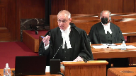
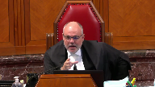
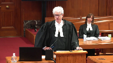
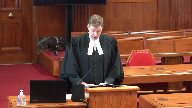

Attorney General of Saskatchewan v. Attorney General of Canada; Attorney General of Ontario v. Attorney General of Canada; Attorney General of British Columbia v. Attorney General of Alberta
This transcript was made with automated artificial intelligence models and its accuracy has not been verified. Review the original webcast here.
Justice Wagner (00:00:01): Bonjour à tous, welcome to all.
In the case of Attorney General of Saskatchewan versus Attorney General of Canada, and Attorney General of Ontario against Attorney General of Canada, and Attorney General of British Columbia against Attorney General of Alberta, for the, well, I’ll give all the names, might as well.
For the Appellant Attorney General of Saskatchewan, Mitch McAdam, QC, Deron Kuski, QC, for the Attorney General of Ontario, Josh Hunter, and Patrick Ryan, for the Appellant Attorney General of British Columbia, Garrett Morley and Jacqueline Hughes, for the Respondent Attorney General of Canada, Charlene Telles Langdon, and Maître Guy Pratte, for the Respondent Attorney General of Alberta, Peter A. Gall, QC, and L. Kristin Enns, QC.
Pour l’Intervenante Procureur Général du Québec, Maître Jean-Vincent Lacroix, for the Intervener Attorney General of New Brunswick, Rachel Standing, for the Intervener Attorney General of Manitoba, Michael Connor, for the Intervener Thunderchild First Nation, Dusty T. Ernewin, for the Intervener Saskatchewan Power Corporation Natal, David M. A. Stack, QC, for the Intervener Canadian Taxpayers Federation, Mr. Bruce Alsor, QC, for the Intervener Atabasca, Chippewan First Nation, Amir Ataran, for the Intervener Assembly of Manitoba Chiefs, Joelle Pastora-Sala, for the Intervener Anishinaabeg Nation et al., Patricia Lawrence, for the Intervener Assembly of First Nations, Stuart Wodke, for the Intervener Assembly of First Progress Alberta Communications Limited, Martin Olczynski, for the Intervener Oceans North Conservation Society, David W. L. Vu, for the Intervener Canada’s Eco-Fiscal Commission, Stuart Elgey, pour l’intervenance entre Québécois du droit de l’environnement et équitaire, David Rabitaille, for the Intervener Canadian Public Health Association, Jennifer L. King, for the Intervener Generation Squeeze et al., Nathan Yeung, for the Intervener David Suzuki Foundation, Joshua Ginsburg, for the Intervener Canadian Labor Congress, Simon Archer, for the Intervener National Association of Women and the Law et al., Nathalie Chalifoux, for the Intervener Climate Justice et al., Larry Kowalczyk, for the Intervener City of Richmond
et al., Paul A. Ildebrand, for the Intervener Smart Prosperity Institute, Jeremy DeBeer, for the Intervener Amnesty International Canada, Justin Safayeni, for the Intervener Canadian Environmental Law Association
et al., Joseph F. Castrilli, for the Intervener International Emissions Trading Association, Elisabeth DeMarcoe.
Je vais prendre mon souffle.
Maitre Lacroix.
Speaker 1 (00:04:15): Monsieur le juge en chef, mesdames et messieurs les juges, bonjour.
Il me fait plaisir d’être ici aujourd’hui pour vous présenter les représentations du procureur général du Québec dans ce dossier d’une importance vitale.
D’emblée, laissez-moi être clair, le Québec n’est pas opposé à la tarification du carbone.
Le Québec n’est pas opposé à la tarification des émissions de GES.
Au contraire, le Québec est un leader en la matière.
Dès janvier 2013, le Québec, par le biais d’une modification législative de l’Assemblée nationale, a mis en place son propre système, le système de plafonnement et d’échange des droits d’émissions.
Pour faire plus court, on l’appelle le SPED.
C’est un système qui répond aux particularités québécoises et qui a été adopté pour faire face à la menace des gaz à effet de serre pour le Québec.
Ceci étant dit, nous croyons fermement que la lutte aux émissions de GES doit se faire dans le respect de la Constitution canadienne, particulièrement de sa structure fédérale.
Alors, deux axes d’intervention aujourd’hui.
Le premier sur POBG International.
Nous vous soumettrons respectueusement qu’il ne s’agit pas d’une assise constitutionnelle appropriée en ce cas -ci.
Deuxième axe d’intervention, nous espérons pouvoir vous présenter les grandes lignes du SPED, pour vous expliquer comment elles fonctionnent et comment elles répondent aux particularités québécoises et aux besoins de la société québécoise.
Justice Wagner (00:05:48): Il n’y a aucun doute, M. Lacroix, que le Québec est à l’avant-garde dans ce domaine-là.
Il a toujours été, je pense.
Je pense qu’on ne se trompe pas, comme dans bien d’autres domaines.
Alors, la question ici, c’est… le gouvernement fédéral pense que ce n’est peut-être pas toutes les provinces qui sont à l’avant-garde, comme le Québec.
Et pour s’assurer que les objectifs de contrôle des émissions soient efficaces, bien, il y a un mécanisme qu’il propose pour s’assurer que chaque province fasse sa part.
Puisque le Québec, évidemment, fait sa part, mais dans les limites de son territoire.
Alors, n’est-il pas dans l’intérêt national du Canada que l’on trouve un mécanisme pour assurer que chaque province fasse sa part?
Ce n’est pas, finalement, l’objectif ultime de cette législation-là.
Speaker 1 (00:06:41): Vous avez raison, M. le juge en chef.
Il est vrai que le Québec est un leader à la matière dès le 1er janvier 2013, le SPED est entré en fonction.
Et effectivement, on ne niera pas que la capacité législative d’une province est limitée par le texte de la Constitution, donc à ses limites géographiques, absolument.
Et on ne niera pas non plus qu’une fois émis dans l’atmosphère, les gaz à effet de serre vont fort probablement et assurément même avoir des effets qui vont au-delà des limites géographiques d’une province.
Ceci étant dit, il n’en demeure pas moins et je reviens un peu sur ce que mon collègue qui représente la Colombie-Britannique a dit hier dans sa plaidoirie.
La vaste majorité des sources, des activités émettrices de gaz à effet de serre, elles se retrouvent quand même en territoires provinciaux.
Si on regarde au Québec, on parle de peu près 80 % des émissions qui sont couvertes par le SPED et ces émissions-là proviennent d’activités qui sont produites par des entités qui sont de compétences provinciales, notamment en question de transport routier, question de production énergétique, question de production industrielle, manufacturière, la construction, le chauffage, ce sont toutes des activités qui émettent des gaz à effet de serre et qui sont a priori de compétences provinciales, que ce soit par 92-13 ou par 92-16, une matière de nature locale.
Justice Côté (00:08:23): Mais avec la croissance des émissions de gaz, je comprends ce que vous dites, ça provient principalement de sources…
Overlapping speakers (00:08:29): Mm-hmm.
Justice Côté (00:08:29): mais l’argument qui était un des arguments présentés hier, c’était qu’est-ce qu’on fait avec les effets préjudiciables de ces émissions-là sur une autre province, sur une province voisine.
Speaker 1 (00:08:42): Je le concède amplement à Mme la juste côté.

Mon point, c’est que dans ce cas-ci particulier, quand on regarde, vous me permettez d’utiliser l’acronyme LTPGS, la loi fédérale, quand on regarde ce que la LTPGS fait réellement, parce qu’il y a deux parties qui sont en cause, la partie 1 et la partie 2.
La partie 1, c’est la redevance sur le carburant, et la partie 2, c’est une espèce de système d’expression, mais qui n’en est pas un réellement parce qu’il n’y a pas de plafonnement, mais qui tarif les émissions de gaz à effet de serre en lien avec des secteurs industriels.
Donc, ça ressemble un peu pas mal beaucoup à ce que notre régime au Québec fait, ce que le SPED fait.
Alors, quand on regarde ça et qu’on regarde ce que la loi fait, on pourrait même parler de son caractère véritable.
Mon collègue du procureur général du Canada, hier, a dit que quand on regarde ce que la loi fait réellement, c’est qu’elle impose un tarif, elle impose un montant aux émissions de gaz à effet de serre.
Alors, il est vrai que les émissions de gaz à effet de serre ont des effets au-delà des limites de la province, mais notre position, c’est que de reconnaître aujourd’hui la compétence fédérale fondée sur paix, ordre, bon gouvernement et intérêt national par rapport à cette loi-ci, parce que c’est ça la question qui est posée à la Cour, par rapport à cette loi-ci, ce n’est pas approprié.
Ce n’est pas pour nier que les émissions de gaz à effet de serre ont des effets extra-provinciaux.
On ne dit pas ça, mais le moyen utilisé ici, aujourd’hui, par le fédéral, et je comprends que le gouvernement fédéral puisse avoir ces préoccupations, on est tous préoccupés de la protection de l’environnement.
Vous avez même dit dans votre jurisprudence constante qu’en matière de protection de l’environnement, que ce soit dans l’Hydro-Québec, que ce soit dans Moses, vous avez répété à plusieurs reprises, insisté sur le fait que la protection de l’environnement, c’est un sujet diffus.
Ce n’est pas un sujet qui est attribué à un ou l’autre des ordres de gouvernement.
Alors, les deux doivent agir.
C’est une soumission respectueuse.
C’est ce qu’on vous plaide aujourd’hui respectueusement.
On ne peut pas reconnaître au fédéral une compétence sous POBG international qui a pour effet de transférer la compétence qui, normalement, reviendrait aux provinces au fédéral de façon exclusive, absolue et permanente, qui compterait.
Justice Wagner (00:11:27): C’est pas un transfert, Maitre Lacroix.
C’est le cas arrière.
Alors, ce que la législation fait, c’est que, dans le cas du Québec, il n’y a pas de problème.
Vous satisfaisez, le Québec satisfait aux normes minimales que la législation veut satisfaire, mais c’est juste si effectivement une province ne le fait pas ou effectivement le mécanisme de la Loi fédérale entre en jeu.
Alors, il n’y a pas de transfert.
Vous gardez le Québec.
Les provinces gardent leur juridiction.
C’est juste que pour remédier aux problèmes, la législation s’assure que tout le monde fait son effort.
Speaker 1 (00:12:03): Je vous dirais, M. le juge en chef, que respectueusement, je serais peut-être un peu en désaccord, on y voit un transfert, pour la simple et bonne raison que lorsqu’on regarde, puis au BG International, quand on lit « ground zero back », quand on lit Hydro-Québec, il est clair pour nous, notre compréhension, c’est que cette compétence-là, elle s’exerce relativement à une matière qui, a priori, ne relève pas des provinces, qui a un caractère distinct, clairement distinct, d’une matière qui relève des provinces.
Alors, si ici, on part de la prémisse et c’est notre conclusion à nous, que les provinces sont validement capables de légiférer sur les émissions de GES pour les contrôler, les réglementer, les tarifer, eh bien, si on applique POBG International pour dire que le fédéral, ce qu’il a fait dans la LTP GES, est constitutionnellement valide, à notre avis, c’est un transfert de compétences, parce que la compétence, elle existe déjà pour les provinces.
Alors, oui, on peut dire que c’est, et l’expression, je m’excuse, je vais utiliser l’expression en anglais, mais c’est un « backstop », mais c’est un « backstop » qui joue le rôle de ce qu’une province peut faire et c’est tellement vrai que quand on regarde la loi, le premier critère, et ça, c’est un problème encore plus criant pour le Québec, mais c’est le premier critère dans l’évaluation que l’exécutif fédéral s’arroge le droit de faire annuellement en regardant ce que chaque province fait.
Alors, le premier critère, c’est l’équivalence des mesures prises par une province.
Ça doit être un indice que les provinces sont compétentes, sinon le fédéral n’aurait pas mis ça dans sa loi.
Si c’est bel et bien le cas, alors nous vous soumettons effectivement que c’est un transfert, que ce n’est pas juste une question d’appuyer, de faire un « backstop », d’être là comme une espèce de police d’assurance.
Le fédéral met en œuvre, par le biais de la relevance sur le carburant et par le biais de son « backstop » et de ses mesures liées à la production industrielle, il met en place des mesures que la Colombie-Britannique a adoptées.
Il y a une taxe sur le carburant en Colombie-Britannique, c’est un petit peu différent, mais c’est quand même un peu le même principe, et par son système « output base » c’est un régime qui ressemble diablement à ce qu’on fait au Québec, avec la différence que le fédéral, lui, ne fixe pas le plafond.
Alors qu’au Québec, on fixe un plafond.
Il y a un décret qui a été adopté en 2017 par le gouvernement du Québec qui fixe pour les périodes 2021 à 2030 les plafonds d’émissions totales de gaz à effet de serre autorisés au Québec.
Et à chaque année, c’est un plafond qui diminue.
Alors notre régime au Québec, non seulement est-ce qu’il vise une transformation de l’économie, des façons de faire, une réduction des gaz à effet de serre par le biais d’un système de droits d’échange, ou d’échange de droits, où on doit acheter des unités d’émissions pour chaque tonne de CO2 qu’on émet dans l’atmosphère, mais en plus, on fixe réellement un plafond.
On s’assure qu’au Québec, il y a une réelle diminution, année après année, du montant total global de gaz à effet de serre émis dans l’atmosphère.
Justice Côté (00:15:54): Selon vous, je comprends ce que vous dites et ce que le Québec fait, selon vous aussi le fédéral veut lutter contre les changements climatiques en contribuant à l’effort de réduire les émissions de gaz à effet de serre.
Vous dites qu’il ne pouvait pas utiliser ce qu’il a utilisé ici, que je vais appeler, vous m’excuserez aussi pour l’anglais National Consume Brands.
Overlapping speakers (00:16:16): Mm-hm.
Justice Côté (00:16:16): Qu’est-ce que, selon vous, il aurait dû utiliser comme autorité pour pouvoir contribuer à cet effort de combattre les changements climatiques?
Que tout le monde reconnaît, il n’y a personne qui l’ait mis ici.
Absolument.
Écoutez, Mme la juge du côté, ce n’est pas que je veux éviter votre question loin de là.
J’avais le droit de vous objecter à ma question?
Speaker 1 (00:16:37): non plus,
mais respectueusement, c’est peut-être pas le rôle du procureur général du Québec de dire comment le Parlement fédéral devrait se comporter, mais ce que je pourrais vous dire, par contre, c’est qu’au-delà de POBG international, il est pas impossible de penser que le fédéral, que le Parlement aurait pu adopter une loi qui aurait été fondée dans une autre compétence.
En matière de protection de l’environnement, cette Cour a validé des actions fédérales sur la base de compétences et numéries, qu’on pense au droit criminel.
Donc, c’est pas impossible de croire qu’il pourrait le faire, mais je me garderais bien de leur recommander quoi que ce soit.
Justice Kasirer (00:17:23): Merci, monsieur le jugeant-chef.
Juste pour compléter votre point, Maitre-Lacroix, par rapport aux questions du jugeant-chef.
Paragraph 75 de votre mémoire, vous dites que le régime fédéral porte attente à la prévisibilité, la stabilité et l’intégrité du SPED.
Overlapping speakers (00:17:47): Mm-hmm.
Justice Kasirer (00:17:47): l’économie
, c’est-à-dire qu’il y a un peu plus d’économie dans le pays, c’est-à-dire qu’il y a un peu plus d’économie dans le pays.
Et si la loi fédérale met en jeu la viabilité du régime québécois, qu’est-ce que vous dites quant à l’assujettissement du Québec au régime fédéral?
Je sais juste que la pensée n’est pas complète ici.
La place que la loi fédérale vous laisse, me semble, à première vue, laisser au Québec, c’est un peu la suite du commentaire du juge en chef.
Laissez au Québec la voie libre pour faire ce qu’il fait avec le SPEN.
Speaker 1 (00:18:24): respectueusement
, je vous dirais, en commençant ma réponse, qu’en vertu du partage des compétences et de la façon dont on le conçoit, je ne suis pas sûr que c’est au fédéral à nous laisser une place.
Nous considérons avoir validement agi selon nos compétences, 92-13, 92-16, sur les activités qui sont situées sur le territoire du Québec, relevant des compétences québécoises, émettent des gaz à effet de serre.
Là où nous en avons, c’est que dans le cadre de son évaluation annuelle, ce que le fédéral fait en n’autorisant pas ou en ne reconnaissant pas l’équivalence du régime québécois pour une période plus longue qu’une seule année, c’est qu’il crée une incertitude.
Overlapping speakers (00:19:16): donc l’épée de Damoclèze.
Speaker 1 (00:19:18): exactement

, c’est l’image que j’avais en tête, l’épée de Damoclès.
Le fait que, et là je vais peut-être terminer là-dessus, le fait que le SPED est un véritable régime de marché où il y a réellement un échange.
On achète des unités d’émission, on peut les revendre, il y a vraiment un échange.
Comme tout marché, il doit être stable, il doit être prévisible, il doit pouvoir assurer la confiance des participants, et le système d’équivalence, d’évaluation un peu arbitraire du fédéral, parce qu’on ne connaît pas nécessairement comment les critères sont appliqués, comment ils sont pondérés, eh bien ça, ça pose problème.
Et peut-être juste dernier point, ça pose problème aussi au niveau de la subordination de l’action législative ou éducative du Québec à une décision de l’administration fédérale prise sur la base de critères qui ne sont pas déterminés en collaboration avec le Québec ou avec toute autre province.
Et ça, nous vous soumettons que c’est une subordination qui peut-être n’est pas juridique, mais qui existe dans les faits, qui semble exister dans les faits, et que c’est contraire au principe constitutionnel canadien qu’il n’y a pas de subordination entre les ordres de gouvernement.
Justice Wagner (00:20:38): Alors, votre, si vous permettez, votre position m’amène à une, qui sera la dernière question, m’amène à vous poser la question suivante.
Compte tenu de ce que vous dites, je serais curieux de savoir quel est, selon vous, pour employer l’expression anglaise, le pit and substance, l’objectif de la loi comme tel, selon vous.
Overlapping speakers (00:20:58): Alors…
Justice Wagner (00:20:59): et s’il n’y a pas matière à double aspect.
Speaker 1 (00:21:03): Alors, selon nous, et là je reprends les propos de mon collègue du procureur général du Canada qui a admis hier lors de sa plaidoirie, que ce que la loi fait réellement, c’est appliquer un montant, appliquer un tarif aux émissions de gaz à effet de serre.
C’est ça qu’elle fait vraiment la loi.
Et dernièrement, dans le renvoi sur la non-discrimination génétique, vous avez indiqué que lorsqu’on veut déterminer le caractère véritable d’une loi, et c’est parfaitement constant avec la jurisprudence de la Cour, on doit regarder le texte, évidemment, de la loi, mais on doit regarder ce qu’elle fait vraiment.
Et ce qu’elle fait vraiment, c’est appliquer deux mécanismes que les provinces, comme l’UPR, Québec, appliquent déjà.
Donc, le caractère véritable, selon nous, c’est effectivement la tarification des émissions de gaz à effet de serre.
Et est-ce qu’il pourrait y avoir un double aspect à cette question dans ce cas si précis?
Nous vous répondons non. Pourquoi?
Parce qu’il n’y a pas deux aspects d’une même matière.
C’est le même aspect de la même matière.
Le fédéral, par le biais de sa loi, des mécanismes qui sont mis en place, fait exactement ce que les provinces peuvent faire et, dans le cas du Québec, fait déjà.
Alors, est-ce qu’il serait possible, en théorie, que le double aspect puisse un jour s’appliquer?
Peut-être, comme c’est le cas dans divers domaines, mais pour pouvoir le déterminer, on aurait besoin de deux lois valides.
Et présentement, nous vous soumettons que nous n’avons pas deux lois valides.
Merci beaucoup.
Speaker 2 (00:23:30): Good morning, a problem that impacts all Canadians, in fact all living creatures on the planet.
Canada has opted to usurp provincial legislative competence in favour of its own brand of climate change activism.
The form of activism is under the illusion of the phrase minimum national standards integral to reducing nationwide GHG emissions.
The national standards we would submit are not a new concept.
We have national standards for building codes, fire codes, the national energy code, all matters that relate to the construction of buildings, generally matters of provincial competence.
There are standards for medical devices, workplace electrical safety, the evaluation of software development.
We have so many national standards that we have a body, the Standards Council of Canada, whose mandate is to promote standardization in Canada.
Standards help governments oversee a regulatory environment.
But let’s be clear, these national standards produced for the benefit of all Canadians are not mandatory.
It seems appropriate to use an example that is presently at the forefront of all of our minds.
Public health, Canada’s response to a global pandemic.
As articulated in our brief at paragraph 13, the federal government has not usurped provincial jurisdiction in addressing what has been one of the greatest challenges of our time.
Canada’s public health agency recommends the use of wearing a mask in public spaces, but they are not mandated to be followed.
It’s not the health of our citizens, particularly our youngest and most vulnerable worthy of a national concern.
The present global pandemic demonstrates that viruses do not respect borders.
A standard is set based on national and global expertise and each province considering its own regional, social and economic interests develops its own laws and programs.
Justice Brown (00:25:44): But presumably Canada could legislate national standards in respect of the pandemic, or can invoke the emergency’s legislation that’s already available under the emergency branch power of POG.
Speaker 2 (00:26:02): I agree with you, Justice Brown, that certainly the present situation that we’re facing would more likely be equivalent to that of the emergency branch.
However, we submitted in our brief that planning for a future pandemic, planning, you know, that would go forward could be considered, you know, a matter of national concern.
But this present pandemic has demonstrated, we’re submitting, that there are alternatives, that there are methods that provinces can adhere to, can, we are all in this together, much like we are with climate change.
And in that respect, it is a demonstration of how we can individually determine what works for our province.
I give you the fact that New Brunswick has been quite successful in dealing with the present pandemic.
Does that mean that Canada should adopt all policies that New Brunswick has adopted and federalize it across the country?
Or is it perhaps because of other regional interests and issues that one province is more successful than another based on population density, based on, you know, any other number of measures?
And because of that, because of the regional differences, provinces should have the opportunity to choose the policy means that is at, that is the best represents and will best impact their province, their population.
They are the ones most familiar with that which would be the most effective, we will say, within the province.
Justice Abella (00:27:41): One of the mechanisms, I guess, that a province could use in something like the current health situation is to close borders, and some have.
How do you do that with climate change and the greenhouse gas emissions?
Speaker 2 (00:27:55): So Justice Abella, we’d submit that this is demonstrating we’re using health as simply a measure that’s similar to that of the environment.
So yes, we said viruses don’t respect borders and certainly some provinces, including New Brunswick at times, have closed borders.
But of course, no one can actually fully close our borders.
People are permitted, much like GHGs, don’t respect borders.
They all can still travel based on certain rules and mechanisms that are in place.
But what is important is that it is reflective of those regional differences, that we have that opportunity based on how it is effective, how it will impact our economy, how it will impact our individual circumstances in a province, that the provinces, based on, as we said, that the federal government has not federalized, has not declared that this, we need to invoke a national concern or the emergency branch because it can better be reflected at the local level, local solutions to local problems, even though we recognize and respect that, obviously, it matters and how we go about responding to a problem, as was articulated yesterday, will have impacts beyond our borders.
There’s no question about that.
But in our federal system, we should have an opportunity, we would submit, to respect the constitutional authority of each level of government.
And we have numerous heads of power under the provincial jurisdiction under section 92 that allow for provinces to pursue their own path with respect to climate change and their own climate change policy, other than-
Justice Wagner (00:29:50): And if the province doesn’t want to follow a path, whatever path that could be, what happened then?
Speaker 2 (00:29:59): Thank you, Chief Justice.
So we would submit that the provincial inability test has to mean more than when a province chooses not to follow the federal government’s preferred policy choice.
The federal government we submit has chosen price stringency requirements as its method, as its preferred tool to address climate change.
But as we’ve submitted that it is not the only method and new provinces across the country have all demonstrated that they can effectively combat climate change.
Now, if a province should choose perhaps to determine that they will do absolutely nothing, that they are not going to engage in climate change.
But we would submit that that one is not the case in the present circumstances, that all the provinces have their own climate change action plans.
And that two, that the that Canada, that the act in and of itself would have to, you know, have that consideration that, you know, we I guess.
OK, let me rephrase.
So provincial provincial inability, the provinces have that choice and they can exercise through the ballot box.
You know, if the province, if one province isn’t adhering to our national climate change strategy.
Justice Brown (00:31:28): What about the Attorney General of British Columbia’s argument, which is that you don’t look at it from the standpoint of the emitting province, but the standpoint of the receiving province?
So if province A is the emitting province and province B is the receiving province, the voters of province A are going to have very little incentive to give two tosses for province B.
So I’m not sure…
What’s your answer to that particular vision of the provincial inability?
I mean, it’s unfortunately called a test.
It’s not a test.
It’s a consideration, but what’s your answer to the Attorney General of British Columbia?
Speaker 2 (00:32:07): I think I would echo the sentiments that were shared by the Attorney General of Alberta, that the record before the court doesn’t actually demonstrate that that is the circumstance.
That we can, that if Canada could prove that the provinces based on, you know, as you said, that if one provinces wasn’t playing ball, and was not playing football,
Justice Brown (00:32:29): As a matter of evidence, maybe this case, maybe, but I’m trying to understand because we’re obviously not going to be redoing the POG test every time we get a POG case, or maybe we will.

But in the abstract, does the Attorney General of British Columbia articulate the correct way of looking at the provincial inability consideration?
Speaker 2 (00:32:55): I think though that it has to mean I agree with you Justice Brown that certainly if you know the impacts of one province’s GHG emissions were having a dramatic impact on other provinces on another province and they would have the inability to legislate to address that but that I think that there are other mechanisms within our cooperative federalism.
Justice Brown (00:33:15): Your other mechanism is the ballot box and I’m saying the ballot box isn’t going to help because the voters of province a aren’t going to be terribly concerned about province b and their voting decisions they’ll presumably be concerned about province a.
Speaker 2 (00:33:27): Justice Brown would submit that the federal government has numerous tools, and much like Quebec, I’m not going to determine which is the appropriate one, but they have the mechanisms in place to incentivize or disincentivize another province’s action.
I would submit that similar to the Canada Health Act, that there you have a system in place where you’re trying to incentivize provinces adhering to a particular standard, but you are not determining how the province must adhere to it, that the provinces are incentivized through transfer payment from the federal government as to how it should address an issue, but at no point has the federal government stripped the province of its constitutional competence of that which is, you know, as part of the constitution as under numerous heads of power.
They have set a standard that we should all, you know, provide accessibility, but it doesn’t mean that they get to determine how we deliver at the local level healthcare.
They should not be able to determine at the local level how we are going to combat climate change.
Justice Moldaver (00:34:41): It’s true that pricing mechanisms are part of this whole piece, a very major piece of the federal game plan, but I thought we determined yesterday that apart from that, the provinces have a great deal of latitude.
You have all kinds of ways of doing pricing mechanisms that are different than the ones that the two means that parliament has chosen, and you are most entitled to look at your own regional concerns, regional industries, and determine how you want those mechanisms to work.
So really, the only real constraint here is that there must be some pricing mechanisms that go with the greenhouse gas, but within that, within that, you have wide latitude.
Do you agree or disagree with that?
Speaker 2 (00:35:37): Well, I would submit that the sorry, I’m getting an echo for a second, the that that is exactly.
Yes, I agree with you.
However, that the fact that we must adhere to the federal government’s preferred policy tool that price stringency is, as we have already stated, one of many mechanisms and tools to address climate change.
If we must adhere to the federal standard, then we have been limited in terms of how we would select to pursue our action against climate change, and I appreciate my time to this up so I would simply submit that the national concern.
In this case, which we would submit is the regulation of provincial GHG emissions is too broad and invasive of provincial competence to survive as a plenary head of power.
Speaker 3 (00:38:26): Thank you.
Chief Justice and Justices, Manitoba, like governments all across Canada, recognize the seriousness of climate change and the need for every government to take measures to reduce greenhouse gas emissions.
And as a matter of policy, Manitoba supports carbon pricing as one important and effective tool to reduce greenhouse gas emissions.
However, we submit that the federal act is unconstitutional.
We agree with the arguments made by Saskatchewan, Ontario, and Alberta that the impugned act is not a valid exercise of the POG power but represents a massive overreach into provincial jurisdiction.
We’d like to focus our argument on three points.
First, to follow up on the point just made by Ms. Standing that regional differences matter, it’s our submission that climate change is not a one-size-fits-all problem that requires a uniform national response, which is inherent to the exercise of the national concern doctrine.
Secondly, many of the questions from the court about presuming that there is still constitutional space for the provinces to act under the minimum national standards begs the question of is there a double aspect when invoking the national doctrine, national concern branch.
And we submit that there is no double aspect, that in fact it displaces provincial jurisdiction.
And thirdly, we submit that this act does not actually impose a uniform national standard but rather allows the federal cabinet to pick and choose which provincial policies are acceptable based on its subjective assessment of stringency.
Justice Brown (00:40:18): Can there ever be a double aspect in a POG case?
Speaker 3 (00:40:22): Not in relation to the matter of POC.
And that’s what this, going back to the anti-inflation reference.
Justice Brown (00:40:32): Because the whole idea of double aspect is you have two matters that arise in respect of the same problem, I think, that’s a way to conceptualize it.
So, by definition, of course, you can’t have the provinces acting in respect of a matter of national concern.
But what the Attorney General of Canada and the Attorney General of British Columbia argue is, well, it’s a different matter, same problem, different matter.
How do you answer that?
Speaker 3 (00:41:07): We submit it’s not a different matter.

You can’t divide a matter based on national standards versus provincial standards.
To take the example that came up yesterday about drunk driving that you raised, there are distinct matters because, on the one hand, the federal government can enact criminal law to criminalize drunk driving.
From the provincial perspective, it’s in relation to driver licensing, highway safety.
It’s not simply saying there’s a national standard over a matter and a provincial standard over a matter.
Overlapping speakers (00:41:43): or otherwise.
Speaker 3 (00:41:44): otherwise you could divide any matter into a double aspect into those two discrete categories.
Justice Rowe (00:41:53): The magic is you use a different modality, a different means of regulation, and by the wave of a hand, you have created a double aspect.
It’s brilliant.
It’s actually genius.
But it’s sleight of hand.
It is a sleight of hand.
Speaker 3 (00:42:10): And in the Crown-Zellerbach decision, this court held that once a matter falls under the POG power, Parliament has jurisdiction with respect to both the extra-provincial and the intra-provincial aspects of that matter.
So for example, with aeronautics, the provinces in theory could regulate the business of intra-provincial aviation, but this court held that can’t work with aeronautics.
It is the type of matter that is indivisible and requires uniform national standards.
It would be disastrous if you had different local rules about airports and what signals meant.
So safety depends on a uniform national standard.
Systemic risk is the same in the capital markets.
You cannot regulate systemic risk without a bird’s eye view of the entire market system.
Otherwise it could lead to a financial crisis.
That’s qualitatively different than the day-to-day risks that security regulators regulate.
And in the anti-inflation reference case itself, at page 444, Justice Betts actually made that point that the provinces could probably continue to regulate profit margins and prices if Parliament saw fit to leave any room left to the provinces, but they could not regulate them in relation to inflation, which would have become an area of exclusive federal jurisdiction.
This court made the same point in the Lacombe decision in regard to aeronautics.
That case dealt with provincial zoning laws regarding the location of aerodromes.
The court didn’t conclude that there’s a double aspect, that the municipalities can pass zoning regulations in relation to aerodromes, but nonetheless it’s inoperative because of paramountcy, because the federal government has passed a law in relation to aerodromes that authorizes it.
The court said that that law is ultra-virus because it is in relation to the POG matter.
And we submit that it’s the identical argument in respect of greenhouse gas emissions, whether you call it minimum standards of greenhouse gas emissions.
The fact is that once you take that matter under the national concern branch of POG, there’s no constitutional space left for the provinces to enact legislation.
So the whole premise, I would submit, of the GGPPA is flawed when it says that the provinces, when you’re looking at the equivalency of provincial regulations, provincial pricing mechanisms, well, if that becomes a matter under POG, the provinces have no jurisdiction in respect of that matter because it’s a single indivisible distinct matter that can only be regulated by the federal government.
The second point that I wanted to raise was about regional differences and the notion that somehow there’s a need for one national standard, uniform national standards.
And we submit that that is not the case.
In his seminal text, Professor Hogg, and you were referred to this yesterday, Professor Hogg pointed out that parliament cannot invoke POG simply because it is desirable to have uniformity across the country, but because uniformity is essential to address the matter of national concern.
And we see that theme running through the jurisprudence.
Again, back to aeronautics.
You cannot have safe air travel unless it is regulated uniformly by parliament, nuclear facilities, capital markets.
But we say not so for greenhouse gas emissions.
The evidence refutes the notion that greenhouse gas emissions must be regulated by imposing uniform national standards.
The working group on carbon pricing, and this is at tab two of our condensed book for your reference, noted that there are a wide range of carbon pricing policies, both explicit, meaning a carbon levy or a cap and trade system, and implicit.
So command and control regulations have an implicit carbon price.
They also stated that carbon prices incentivize low cost reductions of greenhouse gases, but the opportunities for those low cost abatement are not available uniformly in all provinces.
The same carbon price could lead to markedly different results in different regions depending on many factors, including current and past efforts taken by the jurisdiction to address carbon pricing.
Every jurisdiction has a unique emissions profile and economic circumstances, and so carbon pricing doesn’t work the same uniformly across the country.
Justice Moldaver (00:47:39): But can you help me out with something I’m just trying to understand?
You’re basing this on the fact that all provinces will do what has to be done, presumably, to meet standards that they accept, the individual provinces accept.
They’re not concerned.
It’s just as Brown just put to you.
You could be in Manitoba, but let’s take Prince Edward Island for a moment, and they say, well, you know what, we’re only putting 10 tonnes of GHD emissions, or megatons or whatever it is, into the air, and we’re not a problem.
I mean, compared to Ontario and Alberta, there’s where your problems are, so we’re not going to bother with having any mechanisms in place, because our contribution to the problem is so minimal, so infinitesimal, that we don’t have to do anything.
How do you get around that?
Speaker 3 (00:48:34): Well, I would submit that the failure to act is a factor.
It’s a factor in the provincial inability test that goes to whether the matter is indivisible but it’s not sufficient.
Unless it can be shown that the matter is not amenable to provincial regulation, that it requires a uniform national response or it can’t be regulated properly, then it’s not a matter that falls within the—
Overlapping speakers (00:49:02): That’s what the federal government is saying, one rogue province could put a wrench into the whole thing.
Speaker 3 (00:49:08): But federal dissatisfaction with provincial policy is not a basis to invoke the POG power and displace provincial jurisdiction in that area over the entire field of that area because it becomes a matter of national concern.

POG is residual and exceptional.
If the federal government is dissatisfied with the way provinces are exercising their own jurisdiction in the area, they are free to exercise the enumerated powers.
And to answer Justice Cote’s question, like Quebec and New Brunswick, we’re not going to tell the parliament what they should do, but they could enact a very similar regime under their taxation power.
They could use their criminal law power as the federal court of appeal noted in the Syncrude case where they used the criminal law power to reduce greenhouse gas emissions through fuel standards.
Justice Côté (00:50:04): Canada yesterday said that it is not obliged to demonstrate that it could have used other powers in order to avail himself of the National Concern Branch.
Speaker 3 (00:50:16): Well, we would submit that the National Concern Branch is intended to be residual and exceptional and the court should exercise great caution before it allows Parliament to say that we’re dissatisfied with the way provinces have exercised their jurisdiction so we are going to displace your jurisdiction in that area and that’s the effect according to the jurisprudence of this court that there are other mechanisms.
Justice Karakatsanis (00:50:42): I’m sorry, I just want to make sure that I understand your position clearly.

Your position is that this would displace provincial jurisdiction to deal with greenhouse gas emissions.
But am I correct that your position rests on the assumption that the matter at issue, going back to Justice Brown’s question, the matter at issue is actually the regulation of greenhouse gas emissions?
Overlapping speakers (00:51:10): or minimum standards to reduce greenhouse gas emissions.
Justice Karakatsanis (00:51:15): minimum standards, then why would that displace provincial regulation dealing with any other aspect, including pricing standards as long as they meet the minimum, the stringency requirement?
The one doesn’t follow.
If you accept that the matter is very narrow, it only displaces a very narrow part of the provincial jurisdiction, and it seems to me your argument was assuming a very broad matter.
Speaker 3 (00:51:47): Well, even if you were to take a narrower characterization of the matter, it still displaces provincial jurisdiction in respect of pricing mechanisms.
Minimum pricing mechanisms.
That’s correct.
The province no longer has the ability to determine what those minimum pricing standards should be.
A matter is not determined by national standards versus provincial standards, and I’d submit nor is a matter of national concern determined by reference to the particular tool that Parliament chooses to enact.
Parliament — you heard in the submissions of the Attorney General of Canada the other day that pricing is essential but not sufficient.
Well, we take issue with the notion that pricing is essential, but even taking that argument at face value, if that’s the case, what is to prevent Parliament from then saying, we also need to pass minimum standards in other areas of provincial jurisdiction because not only are we not satisfied with the pricing standards, which is not sufficient to deal with the problem of greenhouse gas emissions, we need to intrude in other regulatory standards in order to ensure that greenhouse gas emissions are reduced nationally.
Justice Abella (00:53:10): And just briefly to sum up, can you just tell me what it is when you say it’s provincial jurisdiction overpricing?
Where does that authority come from?
Speaker 3 (00:53:21): That authority comes from regulation of industry under 92-13.
It depends on the particular area where the GHG emissions are being regulated, but it could be regulation of the environment under 92-13, regulation of industry under 92-13, 92-16.
It could be taxation power to the extent the province introduces a carbon tax that is designed to regulate an incentivized change behaviour.
Thank you very much.
Speaker 5 (00:54:58): Good morning Chief Justice, Justices.

Can you hear me fine?
Hi, my name is Dusty Ernwine.
I’m counsel for the intervener Thunderchild First Nation.
I want to thank you for the opportunity this morning.
Thunderchild is a signatory to Treaty 6, of which I acknowledge is the territory where I speak to you from today.
Thunderchild First Nation is further recognized as a band under the Indian Act.
It is my intention to be very brief and direct this morning, speaking specifically to the factual considerations of the courts of appeal in their reasons, specifically the Saskatchewan Court of Appeal and the Ontario Court of Appeal.
Of specific concern to Thunderchild is the finding that Part 1 charges are those of a regulatory charge instead of a tax.
Thunderchild’s interest in these appeals lies specifically to the taxation rights in which they hold and they take no position with respect to the arguments raised yesterday about the emergent need to address climate change.
I think we all agree climate change is occurring, however, where people differ is the means to address it.
So as we know, and we submit that the charge under Part 1 is in effect a taxation against First Nations for their energy consumption.
Thunderchild First Nation pays the GGPA charges on its property, utilities, and other lands.
Part 1 of the charge is collected by the Minister of National Revenue.
It is then administered back to the respective provinces or those prescribed persons of that said province.
So although the Act may in effect attempt to be revenue neutral, we advise the court that no revenue, none of these resources, has ever returned to First Nations.
So from the perspective of the First Nation being a band under the Indian Act and being a ratepayer under Part 1, the charge is collected and ultimately never seen again.
Thus, we submit acting as a reallocation of First Nations funds to both provinces and or those prescribed persons of the province, whoever’s in receipt.
We characterize this as a revenue generating procedure.
So we’ve heard about the purpose of the Act.
Part and parcel being to affect behavioural change.
And I think part of achieving that behavioural change is directed from the return of those monies collected under Part 1.
Part of achieving that behavioural change is directed from the return of those monies collected under Part 1.
Overlapping speakers (00:58:19): it as a reward for good behavior so this does not
Speaker 5 (00:58:22): occurred for Thunderchild First Nation.
There’s no means for which Thunderchild can realize this return.
Unlike an individual ratepayer or taxpayer in Canada or a corporation, Thunderchild is not able to file annual returns.
The return either goes directly to the province to be expended at the province’s discretion or to the prescribed persons of the province.
So although we didn’t raise this necessarily in great detail within our written material, I think given yesterday’s detailed discussion on the on the purpose and intent of the Act, I think it’s important to note that this specific purpose only disproportionately affects acts that disproportionately affect First Nations who are not afforded the opportunity to change their energy consumption behavior due in large part to factors outside of their control ultimately having an adverse effect on Thunderchild’s ability to exercise their recognized section 35 rights under the Constitution.
Overlapping speakers (00:59:40): So I think this.
Speaker 5 (00:59:40): This is a good place to conclude.
My time is almost up.
I understand the forthcoming interveners will speak in greater detail to some of the considerations of Section 125 of the Constitution Act, and we wish to advise that Thunder Child land and property is reflective of those same discussion points which will further be spoken to.
Justice Wagner (01:00:08): Mr. David M. A. Stack, QC.
Speaker 6 (01:00:18): Thank you for the opportunity to appear today by video link.
The interveners I represent, SAS Power and SASK Energy, are agents of Her Majesty, responsible for generating and transmitting electricity and for distributing natural gas in Saskatchewan.
And the Saskatchewan legislature not only expects these interveners to deliver energy, they’re equally tasked with reducing emissions from energy use, promoting energy efficiency and implementing cleaner technologies.
That’s part of the business of managing electrical generation and natural gas distribution in my submission, and thereby fits within what we submit as the exclusive power of the province under 92A to manage natural resources and electrical generation.
92A was a reaction to the energy policies of the federal government in the 1970s.
Policies that were described in this court’s exported natural gas judgment as a blend of pricing and regulatory policies designed to serve the federal government’s national energy program.
And it’s also reported in that case that the federal government justified these policies at the time on the basis that they’re, why should one or two provinces be able to stand in the way of the measures and policies that the federal government believed were necessary to ensure the energy security of the rest of the country.
And with the subsequent advent of 92A, the federal government recognized that the provinces can and should be entrusted with the exclusive competence to legislate over the management of natural resources and electrical generation.
And it is well the government, federal government did so we submit, because the energy needs and capabilities of every province is different, and there are few things more local than of concern than the heat that warms our homes and the power that keeps the lights on.
As noted in our materials, Saskatchewan is a very cold place for much of the year, and we have a modestly sized population spread out over a landmass bigger than California.
So what keeps homes warm and lit in Ottawa is not what works in Metal Lake, and the means and measures of reducing emissions also differ as are, as noted in our affidavits.
And yet today we have another blend of regulatory and pricing measures that the federal government has enacted, and the uncontroverted affidavits of the interveners, these interveners, demonstrate the significance of the impact of this law on these Crown agents.
The financial impact is in the hundreds of millions.
The law is impacting, intending to impact, everything from pricing to the rate of production, the technologies and raw materials used in this energy production and distribution.
The legislation is very much about managing, a synonym, supervising, how electricity is generated and how much natural gas is used in Saskatchewan.
And one of the more unfortunate impacts in Saskatchewan is that SAS powers plans to move to greater renewable sources of lack of electricity.
Plans built on Saskatchewan circumstances will actually be slowed by this law, and that’s explained in the affidavits of Bruce Aghetto.
Indeed, the uncontroverted affidavit explains this law is forcing SAS power to face the possibility that the province may be required to give up on electrical generation, entirely an attempt to rely on imported electricity.
So for this industry, the law may not be a sledgehammer, but it does act somewhat like a steamroller.
And no matter which articulation of the pith and substance of this law you arrive at, and some are pithier than others, I respectfully submit, we still run headlong into the fact that by device and by design, it’s seeking to regulate, supervise, manage electrical generation and natural resources sectors in the province.
It was asked several times yesterday of a province does not do its part, what then?
And when we hear that, we hear echoes of the arguments made to justify the national energy program.
How could one province stand in the way of the measures needed to secure energy security for the whole country?
And yet, 92A was subsequently agreed to, and I submit it’s because there should be a level of trust in this country that the provinces are capable of managing these sectors and adopting policies that are not just simply in the best interests of themselves, but also their neighbors and confederation.
And there’s no evidence to the contrary.
We respectfully submit.
Justice Abella (01:04:54): Is there any application or anything we can take from 92a3, sub 3, which preserves to the parliament the overriding authority if there’s a conflict between provincial and federal?
Speaker 6 (01:05:10): I think you can, I think the clause is very important, but certainly when 92A was agreed to, it wasn’t thought that the national concern doctrine would be the means by which the 92A would be undermined.
And it’s important to keep in mind that unlike broadly worded provincial jurisdiction, property, civil rights, etc, local nature, this is a very specific right of the provinces, specifically agreed to and granted to.
One might be able to surgically remove a matter from property and civil rights that has become of national concern.
If you try to give the government, federal government, supervisory jurisdiction over electrical generation and natural resources, the 92A is lost as an exclusive provincial power.
Thank you very much.
Thank you.
Justice Wagner (01:06:05): Mr. Bruce Alsor, QC.
Speaker 7 (01:06:33): Thank you, Chief Justice, Justices.
The Canadian Taxpayers’ Federation is concerned with the rights of ordinary Canadians offered by Section 53 of the Constitution.
This right has been characterized by this court and others as no taxation without representation in King Street investments, for example, and it stretches back at least to the English Bill of Rights of 1688.
In modern times, governments have often tried to get around this constitutional requirement for taxation by growing their revenue from regulatory charges.
As Justice Rothstein found in the Connaught case, where a regulatory charge has the characteristics of a tax, the court must ascertain which is dominant and which is incidental.
Now, yesterday you heard Ms. Telles-Langdon explain how the carbon tax meets the definition of an administrative charge.
She relies on the proposition primarily that if its purpose is to change consumer behaviour, that is enough to make it a regulatory scheme in and of itself.
With respect, that can be said of many, many taxes charged by the federal government and provinces.
If that is all that is required for a tax to become a regulatory charge, then really the floodgates will open in the future for governments to simply avoid the restraints of their constitutional authority to levy taxes.
There is no doubt, I think, having heard the parties yesterday, that the carbon tax meets the test of a tax as defined by Sir Lyman Duff in the Lawson case.
It meets all the criteria set out.
The issue for this court, as it was in the state and West Bank and Connaught, is whether it falls, not whether it can be characterized as a tax, but what is its predominant characteristic.
Does it also fall within the criteria of a regulatory charge?
Even if this court agrees with Ms. Telles-Langdon’s characterization that it is intended to affect consumer behaviour and that is enough, that is only one of the four factors articulated in the West Bank test.
I know in West Bank and it was commented on in Connaught that this is not a four-part test.
You don’t need to adhere to all these parts, but it is the best indicia we have of a complete articulation of what constitutes a regulatory charge.
I would like to briefly use my time to take you through the other three aspects of that test.
It has to be a complete, complex and detailed code of regulation as the fees in Connaught and West Bank were integrated into schemes to operate a national park or reserve.
Part one of this act doesn’t do anything except create and enforce and collect a tax.
It cannot fairly be described as a complex or detailed code of regulation.
The third factor in West Bank is that there has to be an estimated cost of the regulation.
Many of the cases deal with this in great detail because one of the factors that distinguishes it a fee from a tax is that the fee is supporting an administrative scheme and that there is a regulatory cost.
In paragraph 23 of the estate discussion, there is quite a bit of discussion about what kind of service is being provided to the person paying the fee.
Tellingly, these fees are collected under this tax.
The only restriction is they must be spent in the province in which they are collected.
They may be returned to consumers in some fashion.
They may be simply given to the province.
I would say you could read the statute to say the federal government can simply decide how to spend the money.
This is very broad.
It has no relation to the individual who is paying the tax.
Tellingly, it’s not even administered by the minister of environment.
This is entirely administered by the minister of national revenue.
I think that should give you a hint as to what kind of measure this really is.
The fourth test in West Bank is whether there is a relationship between the person being regulated and the regulation.
In both Canada and West Bank, the people paying the fees receive the benefit of a park or a reserve and the administration thereof.
In the state, it was very clear that the fee was something people were paying to receive a service from the probate registry.
Yet that was still considered to be a tax.
Here, the consumer paying a fuel tax receives no service, has no relationship other than simply paying the tax.
Looking at all the West Bank factors together, while it is certainly possible to construe an argument that it meets these definitions of regulatory charges on each, it is much harder to say that this tax falls squarely into what is contemplated by a regulatory charge.
Justice Wagner (01:11:57): Tamir à ta reine.
Speaker 8 (01:12:46): The people of the Athabasca, Chippewa and First Nation have lived in the peace Athabasca Delta of northern Alberta for at least 7,000 years.
Their knowledge of the environment, the hunting, the fishing, the trapping has sustained them for millennia in a harsh land that would kill most of us.
The hunting, fishing and trapping are existential.
They’re sacred to their culture.
And in 1899, our culture agreed.
The crown signed treaty 8 and a century later in 1982, we gave those rights to hunt, trap and fish constitutional ennoblement.
But climate change now threatens those rights and that treaty.
Because while Canada’s goal is to warm no more than one and a half degrees, scientists predict that my client’s northern homeland by the end of the century will warm as much as seven degrees.
Seven degrees to illustrate is the difference in average temperature between Vancouver and Mexico City.
Seven degrees is akin to taking my client’s homeland and immersing it and their treaty rights in a steamer basket.
For example, the affidavits of Lisa Tizasi explain how life depends on hunting caribou for food, for clothing, for ceremony, but the woodland caribou’s habitat is so compromised by climate change that they are now scarce and illegal to hunt.
Climate change has all but extinguished that chapter of indigenous existence.
My clients call themselves the denesulina or true people.
But how shall they remain true to their culture and identity if climate change drives them from their homeland and into suburban Edmonton to live?
That would be an existential end for them as a nation.
The treaty rights to hunt fish and so forth are extra provincial because treaty 8 covers British Columbia, Alberta, Saskatchewan and the northwest territories.
The rights there when infringed or extinguished are quote unquote extra provincial harm for crown Zellerbach purposes.
But it’s also section 35 constitutional harm.
In the Quebec veto reference, this court said, quote, the Constitution Act 1982 directly affects federal provincial relationships.
And for this reason, the court ought not to conduct a federalism exercise under sections 91 and 92.
Justice Rowe (01:15:44): 1982 Constitution Act affected the division of powers because section 31 says exactly to the contrary.
I mean it’s in the text, anyway, but carry on.
Speaker 8 (01:16:00): I submit this court ought not to conduct a federalism exercise under sections 91 and 92 without factually acknowledging that global heating is extinguishing section 35 rights.
Both are constitutional considerations.
Both must be respected.
It would, I believe, be unwise to solve the federalism problem, justice, in such a way that invalidates the act and that accelerates a section 35 treaty rights problem.
Your reasoning on crown Zellerbach should recognize this or the solution to today’s constitutional problem risks be getting a fresh new constitutional problem tomorrow.
Chief justice Dixon and Mitchell and Peguas band felt the honour of the crown disallowed this and wrote, quote, from the aboriginal perspective any federal provincial divisions that the crown has imposed on itself are internal to itself.
So as you apportion the sand grains of 91 and 92, since 1982 arguably you must strive that the division of powers concurrently upholds section 35 rights which militates for upholding the act, parts one and two.
Finally, justices, you’re called on here to deal with something new, something of a gap in our legal order.
In 1867 and for 7,000 years before that, anthropogenic climate change was scientifically unknown.
Speaking as a scientist, the last time the earth had this much CO2 in its environment was over 3 million years ago before homo sapiens existed.
That surely is a new matter for the crown and the people and with respect the constitution and treaty rights ought to adjust for reconciliation, for life itself and of all people in this country.
Thank you.
Justice Brown (01:18:11): legal order, and I’m wondering if that speaks to whether there’s any meaningful distinction between the so-called gap branch of POG and the national concern branch of POG.
Do you have a submission on that point?
Speaker 8 (01:18:32): Thank you, justice.
In our factum we argue that the three branches, national concern, emergency and gap can be read somewhat fluidly.
And there being a gap or a quote unquote new matter since confederation is something to consider whether you invoke the general residual power of pog.
Now factually anthropogenic climate change was only theorized at the beginning of the 19th century and only experimentally demonstrated as true mid-19th century.
So it was well outside the contemplation of anyone in 1867, even scientists themselves.
That’s explained in our factum.
We think that scientific newness makes it a bit like aviation or radio say and does more readily place it inside the general residual power.
Justice Wagner (01:19:25): Thank you.
Justice Brown (01:19:25): Thank you.
Speaker 4 (01:19:36): So Tom, what do you think about after a few days?
Speaker 9 (01:19:44): Good morning, Chief Justice and Justices.
The Assembly of Manitoba Chiefs intervenes in these appeals to make one main argument.
Ignoring—governments and courts can no longer ignore the existence and insights of First Nation laws.
Ignoring this reality fundamentally impairs reconciliation and the spirit and intent of treaties.
These appeals presents an opportunity for this Court to first, clarify the existence of First Nation laws as independent from Euro-Canadian laws, and second, to correct the misconceptions which do not align with reconciliation.
We are at a critical point in history for reconciliation.
At the same time, urgent action is needed to address the climate change crisis.
Carbon pricing is the only proposed method by the federal government to address climate change.
To date, these appeals have entirely ignored the existence of First Nation laws and the original intent of treaties.
The status quo can no longer stand if we are to embark in our journey to reconciliation.
The Supreme Court of Canada is not just a court.
It is an institution which plays an essential role in clarifying the law for all Canadians.
It may be tempting to vote for—
Justice Rowe (01:21:22): that we have to maintain our role as a court and not become some super legislative institution.
If we lose our footing as a court then we we abandon our proper role in the separation of powers.
Speaker 9 (01:21:38): Justice Roe, the Assembly Manitoba Chief’s submission is that on an issue of such importance and in the spirit of reconciliation, it is no longer acceptable to exclude First Nation laws.
The status quo cannot stand and reconciliation demands more.
The court has referenced several times the importance of reconciliation, whether as an objective or as something to be achieved or a goal, and reconciliation cannot be delegated, deferred, or denied to some indefinite time in the future.
It is tempting to focus narrowly on the constitutional division of powers, and in fact, that is what we, as lawyers, are trained to do.
However, doing so…
Justice Rowe (01:22:27): But is that not the reference question which was put to the courts?
Is it not our responsibility to answer the question which was posed to us?
Speaker 9 (01:22:39): Governments and courts will continue to ignore First Nation laws if this court does not pronounce themselves on the importance of First Nation laws.
Reconciliation, which is about an ongoing process and establishing respectful relationships, will not happen until this court respects First Nation laws.
Doing so ignores the reality that one of our founding nations is missing from this debate.
A debate about one of the most important issues facing Canadians today.
Reconciliation is not about establishing new relationships, it is about renewing the original intent of treaties, which was grounded in this mutual understanding and respect of First Nation laws and ways of being.
Establishing and maintaining respectful relationships is not possible without the respect of First Nation laws.
That was the foundation and promise of treaty.
This court has been entrusted with the responsibility to correct the misconceptions which do not align with reconciliation.
Grappling with and correcting these misconceptions is an essential part of reconciliation.
The story of Canada that is rooted in the notion that French and English are the only two founding nations causes profound harm to reconciliation and must be corrected by this court.
While the Assembly of Manitoba Chiefs takes no position on the outcomes of these appeals, it asks for a statement from this court that reconciliation requires the Crown to engage on it with First Nation laws as equal and distinct from Euro-Canadian laws.
Climate change is too important and too complex for only one treaty partner.
A new path must be charted by this court, one that is consistent with our journey to reconciliation.
We are all here to stay.
Justice Wagner (01:24:50): Thank you very much.
Thank you.
Speaker 26 (01:25:47): De quoi on la compte?
Justice Brown (01:26:13): Thank you.
Justice Wagner (01:26:16): We’ll wait for Justice Martin.
Have a seat, please.
Thank you.
Speaker 26 (01:28:10): Good morning, chief justice, justices.
I’m honoured to appear here today on behalf of the Anishnabeg Nation and the United Chiefs and Councils of Minidumna Sing or UCCMM.
Our clients represent First Nations whose traditional territories and the exercise of their traditional practices and inherent rights have been adversely impacted by climate change.
We’re here today to ask this court to reaffirm the principle that all parts of the constitution must be read together and that in this case that translates into the need to reconcile the distribution of legislative authority in sections 91 and 92 of the Constitution Act of 1867 with the promise of recognition and affirmation of Aboriginal and treaty rights in section 35 of the Constitution Act of 1982.
I’d like to take a moment and just address the question raised by Justice Roe before the break.
He pointed to section 31 which says nothing in this charter extends the legislative authority of anybody, the legislative power of anybody or authority.
Section 31 is in part one of the Constitution Act which is generally referred to as the charter according to section 34.
Section 35 actually falls in part two so it’s not part of the charter per se.
I just wanted to note that.
The impacts that climate change has had on our clients and on First Nations generally was referenced by Chief Justice Strathy in his reasons and he cited the affidavit of Tribal Chief Patsy Corbiere who said that these impacts impair their ability to sustain themselves by observing traditional practices and threatens their continued existence as a self-determined people.
Put very simply, GHG missions and climate change pose a very real threat to our client’s ability to continue to exercise the Aboriginal and treaty rights that section 35 says are recognized and affirmed.
It’s our client’s position that Parliament must have the authority to enact legislation directed at establishing minimum national standards to reduce greenhouse gas emissions as this is the result most consistent with the promise contained in section 35.
A finding that the GGPPA is ultra-virus parliament would leave our client’s constitutional rights subject to the whim and the political will of individual provinces.
That simply cannot be the correct approach.
I’ve included in our condensed book all of the paragraphs from the Interior Court of Appeal that make any reference to section 35 or to the words Aboriginal or Indigenous.
I won’t take you to them but there are a total of eight paragraphs and only one of them is relevant in any way to legal analysis and I’d like to come back to that in a moment.
Our factum sets out our view as to how section 35 rights can and should be factored into this court’s analysis under POG and I’ll simply highlight two points made there.
First, we say that the characterization of the pith and substance of the GGPPA should be narrow and specific.
As this leaves the maximum possible space for legislative action by other levels of government, including Indigenous governments, who may wish to take measures to address the impacts of greenhouse gas emissions and climate change.
That approach to characterization is consistent with section 35.
Secondly, at the classification stage, when considering whether a matter is one of a national concern, according to the criteria set out in Crown Zellerbach, we would urge this court to expressly acknowledge that section 35 rights are among those extra provincial interests that would be, and indeed have already been, adversely impacted by provincial inability to deal adequately with the matters addressed in the GGPPA.
I mentioned a moment ago paragraph 113 of Chief Justice Strathy’s reasons.
It’s the one paragraph where he references Indigenous issues and treaty rights within the context of his analysis.
He cites a summary put forward by the Attorney General of British Columbia on this aspect of the test, which expressly recognizes that Indigenous and treaty rights are among the extra provincial interests to be considered.
Chief Justice Strathy cites it and says it’s a good summary, but then proceeds not to refer to these interests in his analysis.
Our clients see this as a missed opportunity to clarify the role of section 35 within the POG analysis and would ask this court to correct that oversight.
Subject to any questions, those are my submissions.
Justice Wagner (01:32:49): Thank you very much.
Speaker 11 (01:33:03): Good morning Chief Justices, Justices.
I’d first like to acknowledge that the Assembly First Nations and this Court is on on gonk and unceded lands.
In the short time that I have, the Assembly First Nations would like to make essentially four points.
That the Greenhouse Pollution Pricing Act is intraviries within Canada’s jurisdiction to pass.
That climate change requires a national approach and this is necessary for all levels of government, including First Nation governments.
Thirdly, the First Nations are susceptible to climate change and its impacts.
And finally, cooperative federalism is required to ensure that not only First Nation lawmaking authority but also First Nation economies can flourish in the future.
And on this point, we note that Canada has prospered over the last century by polluting and using up the atmospheric space for greenhouse gas emissions.
There’s a very, basically there’s no more room in the atmosphere which could impair First Nation economies from further developing in the future and that’s something that the Assembly First Nations would like this Court to consider.
Now the question posed by the Lieutenant Governors is whether or not the Greenhouse Pollution Pricing Act is unconstitutional whole and part.
The Assembly First Nations argument or submissions is that it is within Canada’s jurisdiction to pass.
The question is also broadly worded as my friends from the First Nation organizations have pointed it out.
It does not only deal with the Section 91-92 analysis but it also requires a Section 35 analysis be interplayed into this.
Now both the federal government and provincial governments have been using case law and basically trying to do the interplay between Section 91 and 92 of the Constitution Act and really describing that is what the fathers of the Confederation envisioned in developing the Constitution.
While we know when the Constitution was developed there was not much consideration for First Nations lawmaking authority in jurisdictions.
However, in this Quebec secession case this Court stated that the individual elements of the Constitution are linked to others and must be interplayed by reference in the structure of the Constitution as a whole.
Now with respect to climate change impacts my friends have pointed out the climate climate change impacts are real for many First Nation communities.
Speaker 4 (01:35:37): You
Speaker 11 (01:36:01): Really not really dressed Nation and how
Overlapping speakers (01:36:09): you
Speaker 11 (01:36:37): Hello?
Overlapping speakers (01:36:38): Yes.
Speaker 11 (01:36:38): Sorry about that.

My internet connection went out for a second.
I am wired and unfortunately it’s unfortunate.
If I may continue.
So really First Nation jurisdiction over greenhouse gases.
The Assembly First Nations would note that provincial inability is a real concern for First Nation communities.
The provinces in one jurisdiction do not own any obligations to First Nations in another province.
So should a provincial government not act, the impacts are real to First Nation communities and governments and other locations across Canada.
And should a polluting province do nothing and their conduct impacts the rights of First Nation communities, there really is no obligation for that province to do anything.
And that is a real concern for many First Nation communities.
It will impact First Nation rights, as my friends have indicated, our ability to use our natural resources as we have in the past.
I’m not sure how much time I have left.
Overlapping speakers (01:37:43): You have 20 seconds, but given the problem we have, I’ll give you one more minute.
Speaker 11 (01:37:47): questions.

All right.
Thank you.
So the assembly First Nations would like to submit that.
In doing the analysis of this question more broadly, the first nation interest must be taken into account into this analysis.
And there are reasons for that.
First of all, many provincial governments, as I mentioned, do not have access to water.
So there’s no roads, thawing for permafrost, those types of things.
And the first nations economies are impacted by this.
For instance, there is a real reduction in fish catch for many coastal first nation communities.
The first nation communities are developing their economies.
And the impacts of the legislation itself must be taken into account, and there has to be some cooperative federalism embedded into the analysis to ensure that the first nation interests are protected.
So the first nation government and provincial governments are dealing with climate change, mitigating climate climate change impacts.
And pursuing their inherent Aboriginal and treaty rights, which is essential.
That there must be some measures of cooperative federalism into the analysis to ensure that first nation interests is are
Justice Wagner (01:39:00): Thank you very much.
Thank you.
Mr. Olsinski.
Speaker 22 (01:39:22): Yes, sir.
Speaker 13 (01:39:23): morning justices or chief justice and justices progress alberta offers this court a framework for assessing the scale of impact on provincial jurisdiction associated with recognizing a matter of national concern the need for which has become apparent throughout these hearings as noted by justices oughten bright and called well below little has been written about the scale of impact inquiry but they suggest that it should consider how and to what extent provincial lawmaking powers will be affected and it should incorporate the principles of federalism and so progress alberta agrees with this approach but makes two further submissions first it is necessary to distinguish between three potential types of impacts and second in order to determine whether any such impacts are reconcilable with the division of powers it is necessary to situate the balance in a meaningful way and so turning to three types of impacts the first are lawmaking impacts and justice brown you were asking this question yesterday these are the ability for the provinces to make laws pursuant to section 92 and 92a inoperability and applicability impacts or paramount cnigi impacts the potential for which arises whenever the federal government enters the field and finally autonomy impacts where even in the absence of direct interaction between federal and provincial laws provincial policies and preferences are affected by federal legislation and so as i hope to show in my limited time applying this framework to the matter before this court there appear to be no lawmaking impacts here no or negligible inoperability and applicability impacts and autonomy impacts that are no worse and potentially the least severe as compared to those that would be associated with the exercise of other heads of power and so beginning with lawmaking impacts these are contingent first and foremost on whether or not pogg operates differently than the other heads of power insofar as the rules of federalism are concerned and the double aspect doctrine in particular progress alberta agrees with canada and british columbia that it hasn’t and it shouldn’t be held to so if that is correct there are no lawmaking impacts here the federal government legislates with respect to the national concern aspects of the problem and the provincial governments legislate with respect to the provincial aspects this leaves inoperability and applicability impacts and finally autonomy impacts in applicability impacts are unlikely to materialize in light of this court’s jurisprudence with respect to the igi doctrine and restricting it to cases of precedent similarly it is unlikely that the ggpa will rise will give rise to inoperate will cause render provincial laws in relation to ghg’s inoperable certainly the ontario court of appeal could find no examples and none of the parties before you yesterday identified any specific examples and so what this leaves essentially is autonomy impacts and so saskatchewan argues that upholding the ggpa as a matter of national concern opens the door to federal regulation of an extraordinarily broad array of provincial life and thereby upsets the constitutional balance
Justice Rowe (01:42:20): Is the substance of your argument that the provinces should be truly grateful that the federal government has not intruded even further into their exclusive jurisdiction?
Speaker 13 (01:42:31): I don’t know that they should be grateful, Justice Roe, but I think that it would be perverse for this court to find the GGPA to be ultra-virus, only to replace it with legislation at the federal level that has greater impacts on provincial autonomy than the GGPA does.
And that’s really where the second part of my submission about the need for a meaningful constitutional baseline comes in.
What that means concretely is to identify the relevant heads of power on both the federal and provincial side.
And so I would agree that in the absence of any other relevant heads of federal power, upholding the GPA as a matter of national concern might upset the constitutional balance.
But that is not the case.
The province has conceded that Parliament can rely on its criminal law power and taxation power to tackle climate change.
And if you consider the regimes that would be passed under those heads of power, it becomes clear that any federal legislation that limits GHG emissions, whether under POG or the criminal law power or taxation, is going to have similar, if not worse, impacts on provincial autonomy.
And so viewed that way, and this speaking to Justice Côté’s concern about whether we have to exhaust the other heads of power, Canada’s decision to invoke POG is entirely consistent with this court’s teaching in Friends of the Old Man River and in Hydro-Québec that the nature of the various heads of power differ.
And therefore, in figuring out where the GGPA belongs, we look at those heads of power.
In light of its regulatory nature and extra-provincial orientation, we submit that Parliament’s POG power is the most principled basis for upholding the GGPA.
And I want to just end with a passage from shifting gears a bit to some of the other concerns.
I have a passage from Ruth Sullivan’s 1985 article on the territorial limitations of the provinces, and this is at tab 14 of our supplemental factum.
It speaks directly to the Attorney General of BC’s closing remarks yesterday regarding BC’s forestry industry in response to concerns about other provinces’ oil and gas industry.
And she says, so long as the competing interests are all situated within the same province, no one can object on constitutional grounds if the provinces sacrifice one for the other.
But where these interests situate in different provinces, a federal response is justified.
And that is the problem with climate change.
Justice Wagner (01:44:51): Mr. David Wu. By Zoom.
Mr. Wu.
Yes, there you are.
Can you go ahead?
Speaker 27 (01:45:25): Yes, Chief Justice, justices?
Thank you.
Oceans North is an environmental NGO that works with local, international and indigenous partners, including the Inuit, to conserve the Arctic.
Climate change impacts are happening now in the Arctic, and Oceans North has seen firsthand impacts of climate change on the Arctic land, its ice, its wildlife and its people.
And you’ve heard from Council for Athabasca, Chippewa, that their homeland is facing seven degrees increase in temperature, while the Arctic is facing a staggering 12 degrees increase in temperature by the end of this century, should the status quo continue.
And so it’s respectfully a little bewildering for me to hear Ontario’s council yesterday saying that this nation has faced similar existential threats in the past.
I think it’s safe to say that humankind, and definitely our nation, has never faced any threat comparable to climate change.
But I want to make three submissions which correspond to the three steps of the National Concern Doctrine.
And first, the first step, and this goes to Justice Kyrgiosiannis’ questions yesterday, I do think there is a threshold question as to whether the issue is one that impacts the Dominion as a whole or has a national dimension to it.
And that’s certainly how I read Justice LaDain’s statement at paragraph 37 of Crown Zellerbach, when he begins his analysis by saying that marine pollution, because of its predominantly extra-provincial as well as international character and implications, is clearly a matter of concern to Canada as a whole.
He’s saying that this first step of the test is met, and he does this before he moves on to the singleness, distinctiveness, and indivisibility analysis.
Now, I say it’s important to realize when you’re reading this passage and when you’re reading Crown Zellerbach as a whole that GHG emissions are also a form of marine pollution.
Thirty percent of GHG emissions are absorbed directly into the oceans, which result in the acidification of our oceans.
More than 90 percent of the heat from global warming is absorbed by our oceans, which raises ocean temperatures.
And their main factor, and we’ve also summarized many of the adverse local and international ramifications of how GHG emissions impact the Arctic marine environment.
And so I say everything Justice LaDain says about marine pollution applies with equal force to GHG emissions.
Now, moving on to the second part of the test, which is, I want to pick up on the discussion of provincial inability and whether it’s about jurisdictional inability or a failure of province to act.
And you heard Council for Ontario and Saskatchewan yesterday say, well, it’s about jurisdictional inability, and as to what happens when a province does fail to act, well, the remedy is to go to the polls.
And I think Justice Brown, this morning, you’ve pointed to the fact that that’s not a satisfactory answer.
And in my submission, I agree, and the Arctic serves as a perfect example for that.
We know the pollution in question is trans-boundary in nature.
We know that the source of pollution isn’t evenly distributed.
All three territories combined produce only 2.7 megatons of emissions compared to, for example, the 260 megatons produced by Alberta alone.
The 260 megatons produced by Alberta alone.
We know the impacts are not evenly distributed, and we know the benefits aren’t evenly distributed.
And so the people of the Arctic who are the least responsible for GHG emissions will face the most adverse impacts, have absolutely no ability to address this problem through the polls, unless it’s the federal polls.
And the argument made that, well, many things provinces do will have extra-provincial impacts misses the point.
The inquiry looks into the scale of impact, and certainly, Professor Hogg uses the qualifier that the consequences must be grave.
And I think that’s why there’s a threshold question to begin with before we even get to this part of the test.
And in this case, there’s no serious doubt that the failure of cooperation would lead to immense consequences.
As to the third part of the test, I think we’re going to have to wait and see what the results are.
I think we’re going to have to wait and see what the results are.
Overlapping speakers (01:49:55): Eww
Speaker 27 (01:49:55): There were submissions today about
Overlapping speakers (01:50:00): in
Speaker 27 (01:50:00): In the vein of subsidiarity, and Justice Kazir, you had raised the question about the principle of subsidiarity yesterday.
In my submission, this might be a value of federalism that could be considered at the last part of the test, but not for what the Alberta Court of Appeal, the majority relied on it for.
The principle of subsidiarity contemplates national minimum standards.
That’s exactly what happened in the case of SprayTac, where the municipality was empowered to create more stringent standards to supplement the federal regulations on pesticides.
Thank you very much.
Thank you.
Justice Wagner (01:50:36): Stuart algae
Speaker 15 (01:50:49): Good morning.
The key issue in this case is how to characterize the matter.
The eco fiscal commission proposes a different approach than was taken by the courts below.
Parliament has the authority to address the extra provincial and international effects of GHG pollution.
Provinces may regulate the intraprovincial aspects.
This characterization is consistent with the act’s preamble and it’s consistent with over 40 years of jurisprudence holding that intraprovincial and international pollution is a matter of national concern.
In crown Zellerback this court ruled and I quote marine pollution is a matter of national concern because it is predominantly extra provincial and international in character and implications.
In interprovincial cooperatives the court found that interprovincial water pollution is of national concern.
The Manitoba courts held that international air pollution is of national concern in upholding the federal clean air act.
And in hydro Quebec the four dissenting judges, the only ones to address POG, found that environmental protection act did not meet the national concern test because it was not limited to substances that have intraprovincial or international effects.
Based on this case law, parliament has been legislating over interprovincial and international air and water pollution for 50 years.
These federal POG powers have not prevented provinces from addressing provincial aspects of pollution because of the double aspect doctrine.
Our factum gives many examples where provinces regulate matters that also fall within POG.
The City of Ottawa regulates zoning despite the Monroe case.
The crown Zellerback case did not prevent BC from regulating marine pollution by coastal cities like Victoria.
Provinces also regulate pollution of interprovincial rivers even though it’s subject to federal laws addressing cross border impacts.
The two governments regulate the same emissions from the same sources but for different purposes.
The same is true for GHGs.
Their impacts are primarily extra provincial but they also have significant intraprovincial aspects which provinces can address.
This kind of concurrency is common and essential in the environment area as this court said in hydro Quebec because pollution often has both intraprovincial and extra provincial impacts.
The reality is that almost all economic activity in Canada including oil sands is subject to a range of federal environmental laws.
Endangered species, air, water, toxic, assessment, migratory birds overlap is common.
This has not led to a federal takeover as Ontario predicts.
Provinces still take the lead in environmental regulation and that is partly because many of these federal laws have a backstop provision like the one here.
Our fact give six examples.
These backstops do not supervise provincial law making.
They promote cooperative federalism by deferring to provincial laws as long as they meet the national objectives.
To Justice Brown’s question, all of these environmental laws also take into account industrial competitiveness.
It’s required.
They’re still about the environment just like part two of the GGPA uses pricing to achieve its environmental goals.
Of course, there are constitutional limits on federal power over GHGs that several judges have asked about.
A good analogy is the Fowler case.
It involved a section of the fisheries act saying logging activities cannot deposit woody debris into any waters.
That was struck down by this court because the link to the federal objective was not sufficiently strong to justify that kind of intrusion into a specific provincial economic activity.
Much like the balancing of the national concern factors.
The GGPA is different.
It targets a well-established matter of national concern, extra provincial pollution while respecting province’s broad authority over intra-provincial aspects.
But even if you characterize the matter of setting national minimum standards, the extra provincial impacts of GHGs still explain why this matter is of national concern.
Because it enables setting national standards unlike education or labour.
One last point.
About the fiscal commission reports which my friend Mr. Gall mischaracterized somewhat.
The reports are in the record but in a nutshell they say this.
The evidence shows that carbon pricing is a vital tool to reduce GHG emissions but not the only tool for three reasons.
It’s by far the lowest cost way to reduce emissions.
Other approaches cost much more.
It’s the most flexible tool and it is complementary to other kinds of climate laws provinces may use and it spurs innovation.
Yes, parliament could have used a different approach to set national standards.
It could have said all provinces must reduce their emissions by 30% to meet our national target.
But that would have been much more intrusive and more costly especially for Alberta and Saskatchewan whose emissions have gone up by 12%.
And that is the flaw in the province’s argument that it should be left to them to ensure Canada meets its reduction targets.
For 25 years after signing the UNFCCC that is what the federal government did.
It left it mainly to provinces and our emissions went up by 20%.
We missed our two treaty goals and if this law is struck down I submit parliament will miss its Paris target.
If it’s upheld both orders of government can act effectively within their spheres to regulate GHG emissions.
Thank you very much.
Speaker 16 (01:57:15): Le Centre québécois du droit de l’environnement et équitaire aimerait aujourd’hui intervenir sur deux points qui ont fait l’objet de beaucoup de questions hier et aujourd’hui, le double aspect puis la notion d’incapacité provinciale.
M. le juge en chef, vous avez demandé à deux reprises hier à des collègues, est-ce que… comment on concilie le double aspect avec la recurrence de le bac ou, si on veut, avec la notion d’exclusivité qui se rattache avec la doctrine de l’intérêt national?
Nous vous soumettons que les deux ne s’opposent pas.
Le double aspect ne s’oppose pas à l’exclusivité des compétences.
Et je pense que l’explication à ça, ça part de la distinction très importante entre la notion de double aspect et celle de compétence concurrente.
Et c’est ce que je pense que le juge Ledin voulait dire dans la recurrence de le bac à la page 433, infini, lorsqu’il a mentionné assez clairement que la théorie de l’intérêt national ne donne pas au Parlement une compétence concurrente ni superposée, mais exclusive.
Mais par contre, il faut faire la distinction entre une compétence concurrente qui permet aux deux paliers d’adopter des lois qui visent la même chose, le même caractère véritable et la notion de double aspect.
Et donc le double aspect ne s’oppose pas à la doctrine de l’intérêt national.
Par contre, ça donne au Parlement une compétence exclusive.
Et donc les provinces ont raison d’être soucieuses de leur autonomie.
Par contre, à notre avis, elle donne à la loi fédérale un caractère véritable excessif.
Elle donne à la loi fédérale une portée hégémonique pour ensuite mieux la disqualifier à l’étape du rattachement avec les critères de la doctrine de l’intérêt national.
Plusieurs l’ont soutenu devant vous aujourd’hui et hier, et c’est la même chose pour nous.
À notre avis, la loi fédérale ne vise qu’un aspect, c’est le risque systémique.
Elle tarifie les combustibles fossiles et les émissions des plus grands émetteurs.
En ce qui concerne l’incapacité provinciale, M. le juge Casirer et Mme la juge Kerakatsanis, vous avez demandé hier, est-ce qu’on parle d’incapacité juridique, constitutionnelle ou conceptuelle, ou on ne parle pas plutôt d’incapacité concrète, faisant ainsi référence au risque systémique sur le terrain de l’inaction d’une province?
Nous vous soumettons en fait que les deux font partie de l’analyse.
Ce n’est pas un ou l’autre, les deux en font partie et ils sont nécessaires.
Ça ressort des motifs du juge Ledin dans l’arrêt Kronzlerback lorsqu’il mentionne à la page 434, paragraphe 39, que la doctrine de l’intérêt national et en particulier le critère de l’incapacité provinciale s’intéressent tant, en fait s’analysent tant d’un point de vue pratique que d’un point de vue conceptuel.
Et on a la même chose en vertu du paragraphe 91-2.
Il y a une analogie évidente à faire avec le paragraphe 91-2, même l’Ontario le fait dans son mémoire, puisque en fait, à notre avis, la compétence sur les échanges et le commerce, c’est en fait une particularisation de la doctrine de l’intérêt national, même dans le domaine commercial.
Et en vertu de 91-2, les deux renvois sur les valeurs mobilières ont établi quand même assez clairement que l’incapacité s’entend des deux.
Le critère numéro 4 de la doctrine, pas de la doctrine, mais de la compétence sur les échanges et le commerce porte sur l’habilitation des provinces d’adopter un régime seul ou de concert.
Ça, c’est de l’incapacité juridique.
Mais par contre, le critère numéro 5, tel qu’établi dans l’affaire General Motors, puis réaffirmé dans les deux renvois sur les valeurs mobilières, s’intéresse au risque systémique, puisqu’on pose la question quel serait l’impact de l’omission d’une province d’agir dans un domaine que se propose d’adopter le Parlement sur les autres provinces.
Et ça, c’est la notion de risque systémique.
Justice Côté (02:01:14): Un argument qui nous est présenté, c’est de dire oui, il y a l’incapacité des provinces, mais dans le présent dossier, il n’y a aucune preuve qu’une province ne fait défaut d’agir.
Speaker 16 (02:01:26): Effectivement
, c’est un argument qui a été soumis, mais cet argument-là, je vous soumettrais, madame la juge Côté, que ça ne s’intéresse qu’à l’incapacité théorique ou conceptuelle, tandis que l’incapacité sur le terrain, le risque systémique, il existe.
Si des provinces font défaut d’avoir des mesures efficaces, il peut y avoir un préjudice pour les citoyens dans d’autres provinces.
Et le paragraphe 37, alinéa 4 de la Recreation de Zollabak est assez clair en ce sens-là.
Le juge Ledin écrit qu’il faut se demander quel impact aurait l’omission d’une province sur l’efficacité du régime au pays.
Et donc, les deux, moi je trouve que l’argument des provinces d’hier auxquelles vous faites référence, en fait, il ne s’intéresse qu’à une facette de l’incapacité, c’est l’incapacité conceptuelle.
Et ça, à mon avis, c’est incomplet parce que c’est dépourvu de la raison d’être de la doctrine de l’intérêt national qui vise à vérifier quel serait l’impact systémique, le risque systémique dans d’autres provinces par rapport à l’omission d’une seule province.
Et donc, en conclusion, le Centre québécois du droit de l’environnement et Équiterre vous soumettent que si cette cour a déterminé que l’absence de rôle fédéral par rapport à la réglementation des valeurs mobilières au Canada était d’intérêt national véritable en vertu de 91-2, c’est d’autant plus vrai, à notre avis, en ce qui concerne la crise climatique.
Merci beaucoup.
Justice Wagner (02:02:50): Thank you.
Speaker 17 (02:03:45): Chief Justice and Justices, climate change is a national public health emergency.
It’s an international public health crisis.
It is the biggest global health threat of the 21st century.
This is recognized by a global consensus of experts, including my client, the Canadian Public Health Association, a national independent NGO that has advanced public health research, policy and practice for over a century in Canada.
Public health is concerned with systemic risks, the collective safety and health of populations as a whole, and GHG emissions are a quintessential public health issue because the emissions, wherever the source is located, disrupt biophysical and economic systems, threatening the well-being and health of populations everywhere.
CPHA has partnered with the respected British medical journal, The Lancet, which has been tracking progress on health and climate change, as outlined in our factum at paragraphs six and seven and at tabs one and two of our condensed book.
The scientific consensus has established that a rapidly changing climate has dire implications for every aspect of human life, exposing vulnerable populations to extremes of weather, altering patterns of infectious disease and compromising food security, safe drinking water and clean air.
These impacts exacerbate transnational and intergenerational inequality, including gender inequality and compromise national and global public health imperatives.
Canada’s public health as a whole is already suffering, as you have heard, as outlined in our factum.
An immediate example is the forest fires in western United States this year, which extreme weather conditions helped ignite and spread.
Those U.S. wildfires are directly impacting air quality across the border in Canada from BC to Ontario, posing major health risks for our west coast, particularly to the elderly who are already the most vulnerable to our other current health crisis, COVID-19.
Since the GGPPA came into force, numerous governments have recognized climate change as an emergency.
For example, the United Kingdom declared a climate emergency in May 2019, Canada last June and the E.U. in November.
And CPHA admits that submits…
Justice Brown (02:05:59): That suggests that we’re talking about the wrong branch of POG.
Speaker 17 (02:06:04): Well, it is our submission, Justice Brown, that although we did not argue this in our factum or before the courts below, that over the course of the past few years, the scientific evidence, the work of the CPHA, and the state’s declarations of climate emergency have made it clearer that climate change is an emergency if there ever was one, and we urge this court to also consider the application of the emergency doctrine as argued by the David Suzuki Foundation and Canadian Labour Congress, who you will hear from shortly.
In our factum, we address climate change as a public health problem, a problem that is subject to concurrent operation of federal and provincial jurisdiction.
As Justice Esty in this court in 1982 held and recognized in Schneider, health is not a matter which is subject to specific constitutional assignment, but instead is an amorphous topic which can be addressed by valid federal or provincial legislation, depending in the circumstances of each case on the nature or scope of the health problem in question.
As outlined in our factum at paragraphs 23 to 27, since the earliest temperance cases, federal jurisdiction over the national dimensions or aspects of public health has not displaced provincial authority over health matters in pursuit of valid provincial objectives.
The approach that legislation at one level of government occupies the field and precludes complementary legislation by other levels has been rejected by this court, as noted by my friends and as recognized by Chief Justice Laskin in Schneider and Spraytech, as Mr. Wu noted.
And similarly, in the 2018 Pan Securities Reference at paragraph 114, this court recognized that both provinces and parliament can and do regulate systemic risks in their capital markets.
In the recent Genetic Nondiscrimination Act reference, this court confirmed that this court’s modern view of federalism accommodates cooperation and overlap between valid exercises of provincial and federal authority.
As we submit in our factum, the modern trend is to strike a balance between the federal and provincial governments through the application of the pith and substance analysis, as held by then Chief Justice McLaughlin in PHS Community Services at paragraphs 62 to 70.
This court recently emphasized the critical role of characterization in determining how a law can be classified in its decision in the genetic nondiscrimination reference, emphasizing that the law’s matter must be precisely defined, taking a close look at the law’s purpose and effects.
Those are my submissions.
Overlapping speakers (02:08:41): Thank you very much.
Thank you for your questions.
Speaker 17 (02:08:42): Thank you.
Justice Wagner (02:08:52): Nathan Youn.
Okay, so we’ll break for five minutes for cleaning up the operation.
Can break five minutes.
Speaker 22 (02:10:21): Yep.
Speaker 4 (02:10:57): You
Speaker 1 (02:11:16): D’accord
, la cour!
Justice Wagner (02:11:46): You
Speaker 18 (02:11:56): Chief Justice, justices, GHG emissions are an intergenerational problem, not just an interprovincial or international one.
We need to take a long-term view to understand GHGs, the threat they pose and the act in this case.
Children and future generations suffer a fundamental and fundamentally unfair asymmetry with respect to GHG emissions.
Our generations enjoy the benefits of those emissions, cheap and abundant energy, the wealth, the jobs, the convenience that comes with it, but our descendants will suffer the full harms and the full costs of those emissions.
This is referred to by the Nobel Prize-winning economist William Nordhaus as temporal free-riding.
You can find an excerpt from his article in our condensed book at page 59.
Children are more vulnerable to the direct harms from climate change from heat stress and asthma to communicable diseases like Zika and Lyme.
They will not age out of this threat.
They will suffer it from cradle to grave.
And the full environmental effects of GHG emissions take decades to emerge.
Some of the climate disruption we’re experiencing now from heat waves to floods and fires, but the worst is yet to come.
The emissions we’ve already emitted could cause another half degree of warming over the next few decades, and we continue to emit today.
But it’s not only that the benefits and costs are unequally distributed, so are the votes.
We get the benefits.
We also have the votes right now to do something about emissions today while it matters, while we can still prevent runaway climate change.
Our descendants don’t.
They’ll only get to vote after it’s too late because due to this asymmetry, we’re on the brink of critical tipping points, one and a half to two degrees Celsius warming by 2030.
Beyond those tipping points, the weather will become more extreme.
Sea levels will rise dramatically, and we will face more severe, unpredictable and unmanageable effects.
In an article in the proceedings of the National Academy of Sciences, this is described as the risk that two degrees Celsius warming could activate important tipping points, raising the temperature further to activate other tipping elements in a domino-like cascade that could take the earth’s system to even higher temperatures.
And that’s found in our condense book as well, page 54.
This intergenerational perspective is discussed in more detail in our factums, but with my remaining time, I’d like to focus on two issues that arose yesterday and I think would benefit from this long-term view.
The first is systemic risk.
GHG emissions do present a systemic risk to Canadian children and future generations.
On a quantitative level, they will have a very serious health and environmental impact.
On a more qualitative level, they threaten the domino effect that I just described, a chain of negative consequences that would destabilize not only the economy, but also the environment and potentially our way of life.
I would point out that contrary to a statement by the Attorney General of Ontario yesterday, national GHG emissions do not present a simple aggregation of local risks or a linear sum.
As I’ve pointed out, we are rapidly approaching thresholds beyond which the effects of our emissions will be non-linear.
They will be increasingly disruptive and hostile.
In the field of public health, climate change is referred to as a threat multiplier, and this can be found in the Lancet 2018 countdown in our condensed book at page 71.
A threat multiplier compounding many of the issues communities already face and strengthening the correlation between multiple health risks, making them more likely to occur simultaneously.
Indeed, climate change is not a single system disease but instead often compounds existing pressures on food, water, security, poverty and many determinants of good health.
It’s not a linear sum.
It’s a complex system.
The second point I’d like to turn to quickly is democracy.
In response to questions from Justices Cote and Cassirare yesterday, my friends from Ontario and Saskatchewan said that if one or more provinces fail to act on GHG emissions and thereby jeopardize collective efforts to mitigate climate change, that’s democracy.
With respect, that’s a short-term view that ignores the severe constraints that our emissions today will impose on the policy options available to future generations.
In the long run, shrugging it in action and saying that’s democracy will mean less meaningful democracy for them.
The dead hands of previous generations will dictate what they can do and what they must do.
In closing, I would point out that some concerns were raised yesterday about how the act might pick winners and losers.
In response to that, I’d say that every day we fail to pay the full cost of our emissions, that we fail to meet our national targets and bring climate change under control, we are picking winners and losers.
We’re winning and our children and future generations are losing.
Speaker 26 (02:17:12): Justices, the Greenhouse Gas Pollution Pricing Act is, first and foremost, Parliament’s response to a great national crisis, which demands a unified national response.
The David Suzuki Foundation asked this court to look afresh at Parliament’s power to address national emergencies and to uphold the GGPPA under that power.
Now, the existence and the nature of the emergency is not in dispute in these appeals.
There is no dispute that climate change is, as many Justices have said, an existential threat to Canadians, and its harms will become catastrophic.
Justice Brown (02:17:46): do, because I’m sympathetic to this argument, but what are we to do with the pretty much exclusive reliance of the Attorney General of Canada on the national concern doctrine?
There’s no suggestion anywhere, I know they have a little paragraph of, you know, we’ll take anything else, any port in a storm, but but there’s no suggestion anywhere in the Attorney General of Canada’s submissions that Parliament understood itself to be acting under the emergency doctrine.
Speaker 26 (02:18:20): Right.
Two points in response to that, Justice Brown.
First of all, this court’s case law has been clear that the use of the word emergency in an act has no totemic importance, and in fact, Parliament’s intention can be derived from the words of the act in the preamble.
I submit that much like the Anti-Inflation Act, there is a much more emphasis based on the crisis and the urgent nature of this legislation.
So we get it from the act itself, and we get it from the Hansard sources and the debates.
Parliament viewed this as an emergency.
As to the Attorney General’s primary reliance on a different aspect of POG, yes.
Now, I will also say that, of course, POG is POG.
Yes, it has two different branches, but we’re talking about the same fundamental power, three.
And yes, and including gap.
That’s right, the same fundamental power. And
Justice Brown (02:19:23): Well, it’s quite different, though, because the National Concern Branch represents a permanent.
Overlapping speakers (02:19:29): Yes.
Justice Brown (02:19:30): recognition of jurisdiction, whereas emergency acknowledges, yeah, it’s a transfer.
It’s not, you know, we’re not going to go cobbling together a new matter.
Overlapping speakers (02:19:41): That’s-
Justice Brown (02:19:41): That’s right.
But when the emergency is over, provincial legislation or jurisdiction is restored.
I’m sorry, you have limited time, but…
Speaker 26 (02:19:49): It’s quite all right, and it takes me to my next point, which is that the only dispute is what you refer to, that whether the GDPPA is in fact of a temporary character, because that is an important check on an excessive or draconian use of what is.
Overlapping speakers (02:20:06): I-I-I-I-I-I-I-I-I-I-I-I-I-I
Speaker 26 (02:20:08): an exceptional exercise of federal power.
Now, we say that the GGPPA is inherently temporary and very far from draconian.
Its purpose is to help achieve rapid emissions reductions by 2030, which is the time of our international target.
And without those reductions, the evidence is we’ll be locked into the worst consequences of climate change.
We will not be able to hold warming to 1.5, below 1.5 degrees and all of the harms that my friend Mr. Hume just enumerated will come to pass.
So even though there is a 10-year horizon for this emergency, an explicit statutory time limit is not necessarily the best way, nor is it the only way to signal temporariness.
And the late Professor Hogg knew that very well.
He said that those limits that are ostensibly temporary can always be continued in force, ostensibly permanent ones can be repealed.
There’s no guarantee of the rule of law or democratic norms.
So this court and the Privy Council before it, rather than insisting upon an explicit statutory declaration of temporariness, approached the issue in a contextual and pragmatic way.
Justice Laskin in anti-inflation and Lord Haldane in the Fort Francis case simply said that the nature of the emergency dictates the longevity of the legislation and that the court is the ultimate arbiter of when the crisis has subsided.
I’ll just refer you to tabs five and six of my condensed book for those references.
And I ask the court today to take the same pragmatic approach with reference to the temporal dimensions of the climate emergency.
Contrary to the submission of Ontario that the GGPPA can never be spent because it’s aimed at an ongoing problem requiring ongoing measures, the undisputed evidence before the court is that there is a 10-year window in which the actions under the GGPPA really matter.
Justice Fian of the Alberta Court of Appeal was correct when he said that that’s the time scale to which our international commitments are calibrated and the purpose of the legislation is to get Canada to cut one-third of its emissions by 2030.
I see my time is running out, so I’ll just conclude with this thought, which is that we are in this emergency situation, having to make deep cuts in just 10 years, largely because some provinces have so far failed or refused to contribute to reductions and their emissions have steadily risen.
That information is in paragraph 11 of our factor.
And thank you, Justices.
Speaker 20 (02:22:47): Thank you, Chief Justice and Justices.
Our submissions following on the David Suzuki Foundation will focus on the structure and operation of the GGPPA to demonstrate that the legislation meets the temporariness requirement under a contextual application of the emergency power doctrine.
We emphasize in our factum that this scheme is a flexible and sensitive response to a complex collective action problem, a collective action problem that features strong incentives to free ride.
Now the point about free riding is not a moral one as it seemed to be taken sometimes in yesterday’s discussion, it is a structural one.
The CLC is acutely aware that the necessity of transitioning to a low carbon economy carries real risk of serious economic burdens to working people in their communities.
And we are also aware that the benefits of pricing carbon may seem at times to be distant or diffuse.
Together these immediate costs and these distant benefits give individuals in government every reason to engage in free riding from time to time.
This legislation is designed to eliminate that incentive to free ride.
It establishes a minimum standard of price stringency as we’ve discussed at length but permits and encourages provinces to act within their constitutional competencies to meet that minimum standard.
And putting a price on carbon is the most effective way to eliminate this incentive to free ride and to distribute the economic impacts equitably and efficiently.
But as also discussed yesterday, the two main parts of the legislation do not apply to all provinces at all times.
The charges imposed under part one and part two of the act only apply where requested or where the province or territory does not implement a measure sufficient to meet the necessary minimum standard.
And this in our submission is an important way in which the legislation is self-limiting in application and duration in both time and space and as such meets the temporariness requirement in a contextual application of the emergency power doctrine.
And with my time remaining, I’ll just conclude with two analogies that we submit are helpful in understanding the way in which the GGPPA works to meet the temporariness test under the emergency power doctrine.
The first is an analogy to the way the GGPA applies and the way in which wartime emergency legislation operated.
The War Measures Act was on the statute books from the First World War until the October Crisis or later, but its application was limited to periods when regulations were promulgated under it during each war and again, more controversially, during the October Crisis.
But the point here is that the statute was on the books and lay dormant for all that time and that did not make it an unconstitutional piece of legislation.
A second, a different and more recent comparison was made by my friend Miss Standing for the New Brunswick Attorney General this morning and commented on by Justice Brown and that’s the provincial responses to the pandemic that we all face.
Provinces and territories each enacted comprehensive responses to the pandemic to address health risks and economic risk to Canadians and they did so with alacrity and consistency across Canada.
And as a result, it was not necessary, as Justice Brown observed, for the federal government to promulgate regulations under its Emergencies Act that would have or could have intruded into provincial and territorial jurisdiction to address those same pandemic-related emergency matters.
Overlapping speakers (02:26:30): Now, it’s-
Speaker 20 (02:26:31): We’re certain that the climate emergency will last longer and be slower to remedy than the current pandemic, but there’s no debate that it is an emergency and brings equal or even greater systemic risks to all Canadians, as I think we’ve discussed at length over two days.
Overlapping speakers (02:26:50): I just-
Speaker 20 (02:26:50): Because it is a longer and slower emergency, in our submission, it requires a contextual application of the emergency power doctrine.
One objection to this approach to the temporariness requirement that we are urging upon the court is that because it is a long, slow emergency, it could lead to permanent states of exception and intrusion into provincial jurisdiction.
However, we say there are at least two good answers to this objection.
First, as just stated, it’s the intent and mechanism of the act that the provinces can take back that jurisdiction by adopting adequate minimum prices for carbon.
They do have the power to terminate the application of the act by dealing with the emergency in pricing carbon and ending the emergency power application in their jurisdiction.
Justice Rowe (02:27:36): I’m just going to mention very quickly what was a temporary measure introduced in a true crisis, the Napoleonic Wars, 1799.
Great Britain, Parliament introduced a temporary measure, it was called the income tax.
Speaker 20 (02:27:55): It and death are still certain.
I take your point Justice Roe.
I think and my friend just before me has urged on the court to consider the the time scale of this emergency
and it’s important that it may be a long emergency
and I think this brings me to the second important limit on the application of the act and why we think it can meet the temporary.
Overlapping speakers (02:28:14): I would ask you to come.
Speaker 20 (02:28:15): conclude please. I will.
Judicial review.
Necessary complement in reviewing the continuing application of the doctrine itself and to the exercise of powers under the Act as my friend Mr. Pratt spoke to yesterday.
And those are submissions.
Thank you very much.
Subject to your questions.
Speaker 21 (02:28:46): Bonjour. Chief Justice and Justices, I represent Friends of the Earth and the National Association of Women in the Law here today, and we’re dedicating these submissions to the memory of Justice Ruth Bader Ginsburg, a champion for women’s equality.
And we’re here to argue that upholding this act under POG is an equality-affirming interpretation of our constitution.
And I’m going to focus on two key points.
So first, upholding this act, why does it uphold substantive equality?
Because climate change, as you’ve heard, is a national emergency that worsens in existing equalities.
So the devastating nationwide effects of climate destabilization that you’ve been hearing about are going to be especially hard on those who already face inequality and marginalization.
We’ve heard about some of the public health implications, we’ve heard about the generational implications, and I just offer you one other example.
When faced with natural disasters like wildfires and storms and floods, for instance, women are at a disadvantage in facing unanticipated costs because of lower average incomes, increased caregiving responsibilities, and such.
So if Canada can’t set legislation to ensure the country reduces its emissions, we submit this will increase the burden on women, especially those who face intersecting and compounding forms of discrimination.
So striking down the act would jeopardize our ability to reduce emissions nationwide and respond to what is a systemic threat that harms women everywhere, no matter where emissions originate.
So our second point is that when faced with different ways to interpret the constitution, we submit this court should choose the interpretation that’s most compatible with substantive equality.
So when looking at the Crown-Zellerback test, for instance, we urge this court to reject the more formalistic, narrow approach that’s been presented by some of the appellants in favour of the more flexible, cooperative approach that has embraced by this court over the last two decades.
When applying the scale of impact analysis in Crown-Zellerback, which Justin Brown aptly noted yesterday is indeed a judgment call, we submit any potential impact on provincial jurisdiction has to be counterbalanced, weighed, yes, with the national systemic transboundary harms including the nature of those harms.
We’ve heard about their magnitude, their irreversibility, their scale.
Once we reach certain tipping points, there’s no going back.
Their urgency.
We’ve heard about the fact that the window of time is really rapidly closing.
Every delay is consequential.
And critically, we also have to factor in the unequal distribution of harms where women and girls, especially those who are indigenous, racialized, or living in poverty are disproportionately impacted by the systemic national risk.
We submit should this court not interpret our constitution to empower all levels of government to do everything possible to address this multifaceted, polycentric threat.
We believe we should.
And that this includes recognizing parliament has a vital and unique role to play in setting national thresholds for emissions that harm everybody, but especially our most vulnerable.
Justices Cote, Abela, and our Chief Justice yesterday asked a vital question, what if one province decides to do nothing?
We say the implications of that could be especially significant for our most vulnerable populations.
Chief Justice Dixon once famously held in the Oaks case that the court must be guided by the values and principles essential to a free and democratic society, which include social justice and equality.
And we submit those values are of the utmost importance here because this court’s decision will have historical repercussions on Canada’s ability to address an existential threat that will be hardest on those who already grapple with systemic inequality and marginalization.
To close, we urge you to insert hope into the hearts of Canadians here by demonstrating our federation is up to the task of dealing with climate change, greenhouse gas emissions, and equality, that there’s ample jurisdictional space in our federation for both levels of government to act within their respective spheres of authority, an act they must.
This act was designed to ensure national accountability to Canadians and the world that Canada will do its part, as it has promised to do, to address this global crisis, while leaving room for the provinces to do their important work.
So we urge you to uphold this act so the country can move on with the critical work of fighting climate change, an issue of unprecedented proportions, and fulfill its duty, international and national, to protect women, girls, and others who are especially vulnerable to the existential national emergency.
We submit it’s the correct interpretation of the Constitution and what we must do for justice and equality.
Unless the court has further questions, those are my submissions.
Thank you.
Speaker 22 (02:34:28): Good morning Chief Justice and Justices.
It’s a privilege and an honour to be here to be part of this discourse.
I want to begin by acknowledging and thanking the work of Co-Council Taylor-Anne Yee and Jonathan Stockdale for the work that they’ve done in getting us to this place.
I want to make it clear who is speaking and what we are saying.
We are not a coalition and we are not an NGO as some have suggested.
The National Farmers Union, which represents thousands of farmers and farm families across Canada, is one of the voices here.
The New Brunswick Anti-Shale Gas Alliance, which is an alliance of 21 citizens groups in New Brunswick, are speaking today.
The Council of Canadians, which represents 60 chapters of citizens across Canada, and in particular with respect the Saskatoon and Regina chapters in the Prairie and Northwest Territories region.
In addition, Climate Justice Saskatoon, the Saskatchewan Coalition for Sustainable Development, the Saskatchewan Council for International Cooperation, the Saskatchewan Environmental Society, the Saskatchewan Electric Vehicle Association, and Youth of the Earth.
These are the voices who have something very simple to say to you.
It is not democracy, as suggested by Saskatchewan and Ontario, that you can just ignore the lives of its citizens.
Democracy exists for a reason and ours, fortunately, with the consent of the provinces and the federal government, have identified what values we must live by.
Those values fundamentally include the respect for the right to life, the right to life of every citizen in this country.
What’s at stake is not in debate.
Factually, the right to life is at risk, not only for Canadian citizens, but for people around the world.
The right to life of Indigenous people and their nations, of women, of children, of present and future generations.
So, our ask is very simple, but we want to urge that everyone, and including the court, listen and respect this ask.
That when the words of this court are read, by all of the families and friends of those we love, that those words are going to say that we respect you.
We respect your right to life, which includes air, water, and an environment that sustains you.
We re-love you and that it matters to us.
So, in interpreting the Constitution of Canada, and I just want to reinforce very quickly, the reference question does not ask, as some have said, about whether or not the government of Canada is exercising its jurisdiction under the vision of powers.
The question, and I’m reinforcing the arguments and beautiful, beautiful positions put forward on behalf of Indigenous people in this country by previous speakers, the question was, is it unconstitutional?
And I don’t know about you, but in my 35 years, the Constitution includes the Charter, the Constitution includes Section 35 and a whole bunch of other provisions, and that we have an obligation to interpret that document in a way that respects all of the values articulated in that Constitution, particularly the right to life, to inform the decision here.
And in closing, we’ve quoted this several times from Southern, and Hunter, we encourage this court, in quoting from you, not to read the provisions of the Constitution like a last will and testament, lest it become one.
Bless you all, and we hope that what we hear and see and read will give that hope and love to all those we care about.
Unless you have questions, thank you very much for the honour of speaking today.
Speaker 22 (02:40:19): Chief Justice and learned justices, I represent six British Columbia municipalities who appear in support of the legislation.
The main issue addressed in my factum is the issue addressed yesterday by Ms. Tellez Langdon and Mr. Ryan on behalf of Canada and Ontario, whether the GGPA levies are regulatory charges or taxes.
Ms. Tellez Langdon has already made most of the points stated in my factum and most of what I might set an oral argument, so I will only address one point on that issue.
The point that Ontario concentrated on in its oral argument is the absence of any requirement in the act to spend the proceeds of the greenhouse gas levies in a related way.
Ontario argued that that is an essential feature of a regulatory charge and Canada disagreed.
A reconciliation of those positions may assist the court.
I submit that they are reconciled as follows.
The overriding test remains.
Overlapping speakers (02:41:12): That-
Speaker 22 (02:41:13): That stated in West Bank, whether the primary purpose of the levy is to advance a regulatory purpose or to raise revenue, the presence or absence of expenditure requirements should be seen as a factor, but only one of the factors in identifying that primary purpose.

In the context of this case, where there is no spending requirement, that would be one point in favour of the tax classification.
However, the key feature of this case is the overwhelming strength of the points in the other direction.
Those are summarized in Canada’s Factum and Ours.
Both of which resemble the reasons of the majority in the Saskatchewan Court of Appeal, which I submit are correct.
I also wish to address a question from Justice Kasirer yesterday, whether the anti-inflation reference might have been decided differently if a qualification relating to minimum national standards had been inserted into that case in some way.
While the question is hypothetical, do BC municipalities submit that the answer is almost certainly no?
There are two points.
The first is that the essential conclusion of Justice Betts was that, quote, containment and reduction of inflation did not, quote, pass muster as a subject matter.
This is stated at 458, and he also stated that the phrase was, quote, totally lacking in specificity and, quote, knew no bounds, close quote.
It is difficult to see how those conclusions, particularly the one relating to completely lacking in specificity, would have been sufficiently changed by a reference to national standards, sufficiently changed to change the outcome of the case.
Second, there are important factual differences between the anti-inflation reference and this case.
In my submission, the dangers posed by climate change can be well summarized by four phrases.
They are becoming life-threatening, they are global in the truest possible sense, and in all practical senses, they are cumulative and irreversible.
Nothing in the anti-inflation reference suggests any analog to these kinds of facts.
Legislation in that case established a federal tribunal with the power to rescind or rewrite contracts which were believed to provide for excessive prices.
Nothing in the decision indicates that there were competing programs being pursued by provinces or that there were serious adverse extra-provincial consequences from one province acting or failing to act in a coordinated manner or that there was an international call to action, the kind described in the arguments yesterday, or that there was any attempt by the international community to identify national standards for different countries.
The factual differences are marked and suggesting not only that the outcome would not have been different but that while the legal principles from the anti-inflation reference may be applicable here, it is difficult to draw meaningful comparisons beyond that.
The final point that I wish to raise relates to the phrasing of the, quote, matter, close quarter of the legislation.
Canada and British Columbia have proposed wording that might be described as including qualifiers to narrow the scope of the matter.
Their opponents argue that this is an artificial and results-oriented process, adding qualifiers that are arbitrary from a legal point of view and are mostly designed to match up neatly with the boundaries of the legislation.
In fact, I recall yesterday Justice Roe gave a word count for one of the formulations.
The BC municipalities submit that the Crown-Zellerback case is helpful on this issue.
In Crown-Zellerback, the Crown defined the matter and issue as marine pollution by dumping.
In other words, marine pollution might alone have been sufficient to identify the subject matter, but the Court accepted a qualifier in the words by dumping on the matter of contaminant release and this resulted in the matter being identified and accepted as indivisible.
This was based in part on reliance on international studies, which had accepted the by dumping qualification as defining a separate topic and that similar situations exist here.
And those are my submissions.
Justice Wagner (02:45:41): All right.
So we can have another break of five minutes so that the tables will be cleaned and lawyers will come into the room.
Overlapping speakers (02:46:43): Thank you.
Speaker 26 (02:46:45): I’m not sure what I’m.
Justice Wagner (02:47:17): So mr. De Beers
Speaker 23 (02:47:27): Chief Justice, Justices, you have a copy of our condensed book.

I’ll turn you right to the last page.
It’s page two at the very back of the book.
If you don’t have it handy, it’s all right.
The Smart Prosperity Institute intervenes in these appeals to address the topic of Canada’s international treaty commitment, and only that topic.
A purpose and effect, and therefore part of the pith and substance of the GGPPA is to contribute to achieving Canada’s nationally determined contribution under the Paris Agreement.
The Paris Agreement is the latest agreement under the United Nations Framework Convention on Climate Change between Canada and roughly 175 other nation states, including both unitary and federated nation states.
If Canada is constitutionally incapable of achieving its nationally determined contribution under the Paris Agreement, it seems it would be alone in the world in that predicament.
And so Smart Prosperity offers this court two ways to integrate this international context into the constitutional analysis.
Neither of these approaches, either under the gap-filling branch or the national or transnational concern branch, rely on a free-standing treaty implementation power that would ignore or override the division of powers.
Rather, these approaches are both grounded in the jurisprudence of this court on the peace order and good government of Canada.
Justice Rowe (02:49:17): So you can’t go in through the front door because of labor conventions, you go around the side and say, let’s do the same thing with a different door.
I think I’m following you here.
Speaker 23 (02:49:25): Thank you.
That’s not how I would characterize the issue.
If you will allow me to begin with the second topic and that’s how the international treaty relates to a transnational concern.
Smart prosperity follows the path laid out by justice Lydane and followed by justice Fian in Alberta, chief justice Strathy in Ontario and chief justice Richards in Saskatchewan, international treaty commitment as evidence of SDI and in the context of a provincial inability or the consequence of a provincial failure.
But smart prosperity goes further than that.
A transnational concern which is defined by the inherently transboundary subject that the treaty deals with and the reciprocal nature of Canada’s commitments to the rest of the world inherently or presumptively constitutes a national concern.
It’s inherently distinguishable from a provincial concern and it’s inherently proportionate in its scale of impact.
I’d like to take you through the crown test to show you how the treaty helps you tick every box in that test.
Let’s not lose sight of the fact that the point of looking at SDI and considering provincial failures is to determine whether this matter is distinguishable from a provincial concern.
And here the transboundary subject matter and the nature of Canada’s commitment to the world to achieve a nationally determined contribution is inherently distinguishable from a provincial concern.
Just like in crown Zellerbach, the international treaty helps to establish SDI and in this case it’s the 22 specific ghgs that are listed in the UNFCCC and priced by the GGPA.
Those are the same substances that helps establish SDI.
Even more important smart prosperity submits is that the provincial failure here, the failure of any province to do its share actually leads to a national inability to act competently in global affairs and a global inability to address a threat to humanity.
And when it comes to the scale of impact, the transnational concern is inherently proportionate when one considers the existential threat to humanity and the need for Canada to engage in global affairs cooperatively to address it.
And this proportionality issue is not just unfettered or unconstrained judgment.
It’s actually informed by principles like minimal impairment and rational connection which exist here.
This is the least intrusive way that Canada can achieve the objective of its national determined contribution.
And the final point that I’ll conclude with chief justice here is on the other way to integrate the treaty issue which is through the gap filling power.
Now these are elaborated on at paragraph 22 of our written submissions and I think this addresses your concern or your question justice brown about the relationship between the gap power and the national concern branch.
The bottom line is that this treaty is not at all like labour conventions and is much more like radio broadcasting and aeronautics.
Overlapping speakers (02:52:52): Thank you very much.
Speaker 23 (02:52:53): Thank you.
Justice Wagner (02:52:54): Thank you.
Speaker 24 (02:53:01): Good afternoon, Chief Justice and Justices.
I’m here today on behalf of the Intervener Amnesty International Canada and my submissions will focus on the role that Canada’s obligations under international law should play when it comes to the analysis under the National Concern Branch of the POG power.
I’d like to use my time to make two points.
First, the issue of minimum national standards for reducing greenhouse gas emissions engages a broad range of Canada’s international obligations, not just under the Paris Agreement, but also under international human rights law more generally.
And second, that fact militates in favor of finding a federal power to enact minimum national standards for reducing greenhouse gas emissions under the National Concern Branch of the POG power.
Turning to my first point, the subject matter of the legislation at issue in these appeals engages Canada’s ability to meet its international legal obligations.
Now, most obvious amongst these may be Canada’s commitment to reducing greenhouse gas emissions under the Paris Agreement framework as Mr. De Beers just took you through, and we know that this commitment was part of the impetus for the legislation we’re looking at today.
And while there’s no guarantee that this kind of federal legislation will result in Canada meeting its Paris Agreement targets, it is unlikely that Canada will be able to make the required emission reductions without the ability to set minimum national standards.
But it’s not just Canada’s obligations under the Paris Agreement that are engaged here.
Canada’s ability to comply with a number of obligations under international human rights law would also be seriously jeopardized if it were unable to set minimum national standards to reduce greenhouse gas emissions such that the impacts of climate change were to continue to spread and intensify throughout this country and the world over the coming decades.
For example, the Convention on the Rights of the Child requires Canada to ensure children have the highest attainable standard of health and that an adequate standard of living for physical, mental, spiritual, moral, and social development is ensured.
You heard Mr. Hume earlier explain some of the disproportionate and severe impacts climate change will have on children’s health.
Similar obligations exist on the Convention on the Rights of Persons with Disabilities, who are in many respects similarly vulnerable to the impacts of climate change.
And with respect to Indigenous Peoples, the UN Declaration on the Rights of Indigenous Peoples recognizes things like the right of Indigenous people to maintain and strengthen their distinct ways of living and require states to prevent things like the destruction of Indigenous Peoples’ lands, territories, and resources.
The Court of Appeal for Ontario recognized that climate change has had a particularly serious impact on some Indigenous communities and Amnesty submits that can be expected to continue and worsen if countries like Canada don’t do their part to meet the Paris Agreement temperature standard.
That all brings me to my second point.
The fact that Canada’s international obligations are engaged by the subject matter of this law supports the conclusion that the law addresses a matter of national concern.
As the majority at the Court of Appeal for Ontario put it, the fact that a challenge law is related to Canada’s international legal obligations is pertinent to its importance to Canada as a whole.
The majority characterized this as a contextual factor pointing towards the conclusion that matter is both national and a concern in the constitutional sense and one that speaks to the matter’s singularity and distinctiveness.
Now, the Court of Appeal was mainly focused on the Paris Agreement framework, but the power at issue here has further international dimensions and engages Canada’s ability to comply with various foundational treaties and declarations under international human rights law, including the examples I mentioned earlier.
And that’s simply a function of how basic, far-reaching, and fundamental the impacts of climate change in Canada are and will continue to be.
Amnesty submits that as a result, the importance and relevance of Canada’s international legal obligations as a contextual factor in these appeals is particularly strong, and it favours the conclusion that establishing minimum national standards to reduce greenhouse gas emissions is a power that falls within Parliament’s jurisdiction.
Subject to any questions, those are my submissions, and thank you for your time.
Speaker 25 (02:58:24): Chief Justice, justices, my clients Environmental Defense Canada, Sisters of Providence of St. Vincent de Paul, and the Canadian Environmental Law Association argue that the act engages parliament’s criminal law power.
There were characterizations yesterday of criminal law being an intrusive or heavy-handed alternative to POG.
However, there is no question that the double aspect doctrine applies to criminal law, and we set this out at paragraph 30 of our factum.
And this court has long recognized that criminal law is more than the criminal code, and that it addresses a broad range of legislation, food, drugs, tobacco, hazardous products, firearms, toxic substances.
Recent case law has also recognized that greenhouse gases are a subset of toxic substances.
The uncontroverted evidence of John Moffat at paragraph 116 of his affidavit is that the enforcement provisions of part two of the act were inspired by the Canadian Environmental Protection Act, a statute that in its application to toxic substances was upheld in Hydro-Québec as valid criminal law.
Justice Rowe (02:59:38): CO2 is not a toxic substance.
I have to tell you, you’re emitting it right now and plants love it.
It’s the concentration in the upper atmosphere which causes heat to be retained.
It is not itself a toxic substance, it is the physical consequence of an additional concentration in the upper atmosphere.
Speaker 25 (02:59:56): Carbon dioxide is listed as a toxic substance under the Canadian Environmental Protection Act Schedule 1.
And it has long been the case that criminal law allows exceptions so that some requirements do not have to apply in each province where there is an equivalent provincial regulation.
The Canadian Environmental Protection Act’s equivalency provisions are an example of that flexibility in the use of criminal law.
So there are good reasons to consider criminal law as a basis for upholding the greenhouse gas law.
Ontario disagrees and it gives two reasons that we fully address at paragraphs 17 through 25 of our main factum and paragraphs 7 and 8 of our condensed book.
First, Ontario says that the law does not prohibit greenhouse gas emissions.
However, RJR McDonald affirmed that parliament may criminalize an ancillary activity without criminalizing the underlying evil.
In that case, tobacco consumption, the underlying evil was not prohibited.
Tobacco sales were prohibited if they occurred without printed health warnings.
As long as tobacco sales were accompanied by such warnings, they could continue.
In our respectful submission, this is no different from the situation in this case where sources are allowed to emit greenhouse gases in excess of the limits as long as they pay a fuel charge or emissions levy.
The firearms reference RJR McDonald and Syncrude all make it clear that a prohibition need not be direct, it need not be total, it can be indirect, it can take a circuitous path and it can even be phrased as a positive requirement if its impact is that of a prohibition.
Ontario’s second reason for doubting that the act is valid criminal law is its view that the act only contains administrative prohibitions and penalties to ensure payment.
We say that the measures in the act are connected to a valid criminal law purpose, inducing greenhouse gas emission reductions and are consistent with this court’s reasons in the firearms reference.
The act’s requirements to register, file information and keep records are directed to ensuring the underlying evil of greenhouse gas emissions is addressed through the indirect approach enshrined in the statute.
These measures are connected to and integrated with a valid scheme of climate change mitigation.
To paraphrase the firearms reference, they are tightly linked to parliament’s goal of reducing the use and emission of greenhouse gases through paying a charge or levy.
With these provisions in place, the conduct of registrants is more traceable and they are more likely to be held responsible for activities that undermine the act’s purpose.
In summary, legislation upheld under the criminal law power can be a complex regulatory regime in relation to direct prohibition of an evil, as was the case, for example, in controlling release of toxic substances identified in the Hydro Quebec case, or it can be a regime that takes an indirect circuitous path to addressing an evil, as was the case in the firearms reference registration system, RJR McDonald’s printed health warnings, Syncrude’s 2% renewable fuel content requirements, and we would submit the legislation that is a subject matter of the within appeals.
Subject to any questions, those are my submissions.
Justice Wagner (03:04:10): Alright, for the EGF Saskatchewan.
Speaker 26 (03:04:13): Yes, sir.
I have three very brief direct points in reply that I’d like to share.
The first of which is that the AG of Canada yesterday said that none of the provinces have come forward with examples of provincial statutes or regulations that have been overridden by the GGPPA.
I mentioned one, paragraph 79 of our factum, a specific example, the Saskatchewan management and reduction of the GHG act which is an output based pricing system that actually meets the federal stringency requirements is such an example.
What you’ll note is in the Saskatchewan management reduction act, the electricity and power and energy industries were exempted from the application of the act, but then the federal government stepped in and applied the GGPPA to those industries such that the Saskatchewan act and the policy was made ineffective by the GGPPA.
What I would say in relation to that is that that is a perfect example of the GGPPA overriding the provincial regulation and the preferred method of the province to deal with the matter of GHG emissions.
I refer specifically to tab 4.1 of our condensed book.
You don’t necessarily need it, but I recommend that it be read by the members of the court.
It’s a letter from then minister of the environment of Saskatchewan, Scott Moe, to the federal government when the GGPPA was being imposed.
The essence of the letter is saying that we take emissions very seriously in Saskatchewan, we are on board with the Paris climate accord, but we just want to do it in a different way.
In appendix A to that letter, he attaches this exact sass power example whereby the $195 million of charges that sass power will now have to pay as charges under the GGPPA will impair sass power’s efforts to be an innovator.
Sass power is one of this country’s leading innovators.
The carbon capture technology that sass power has developed over the last 13 years is world leading technology.
It’s innovation that is encouraged by the policies of the province of Saskatchewan.
One line in his letter in appendix A he says in relation to the GGPPA charges applying to mitigate this impact, sass power may be required to move resources away from our emission reduction plan putting the 2030 goal in jeopardy.
It’s an example of that conflict that we talk about with the transfer of jurisdiction or the concurrent jurisdiction that is created by the GGPPA and what we submit at a larger scale is that the federal interference in a matter best regulated regionally impairs the nation’s efforts to maximize overall reductions.
It’s impairing the efforts to experiment and innovate which is one of the principal benefits of regional regulation.
The second point I have in relation to response, and it’s partly in relation to the extra provincial impacts and justice brown’s question that arose out of BC submissions about province A and province B and what perspective we look at it, everybody agrees that regardless of extra provincial impacts which are something that occurs with lots of provincial regulation in relation to impacts on other provinces, we all agree that the test, the SDI test and the provincial impact tests have to be applied.
If you look at the single distinct indivisible piece the indivisible part cannot be met.
If you look at hydro Quebec it’s a perfect example because it dealt with toxic substances and tab 10.6 of our condensed book, again, you don’t necessarily need to go there, but this was dealt with exactly by this court in relation to the equivalency provisions of the Canadian environmental protection act.
The equivalency provisions allowed the provinces to continue to regulate the very matters in the CEPA should they meet the equivalency requirements and the court dealt with the issue of how does that then affect the divisibility of the issue.
Can it still be indivisible if the federal government allows the provinces to still regulate this in some fashion and the court says that paragraph 77, the section 34.6 equivalency provisions also implicitly undermine the appellant submission that the provinces are incapable of regulating toxic substances.
The reason it’s relevant to Mr. Justice Brown’s question as well as of course toxic substances are very similar to what we’re dealing with here in that they cross borders and they cause harmful effects in other provinces, but the court got around that here by virtue of these equivalency provisions which is very similar to what we’re dealing with here where the provinces are allowed to continue regulating, the very same thing that the GGPPA regulates.
The court goes on.
If the provinces were unable to regulate, there would be even more reason for the federal government not to agree to withdraw from the field.
Section 34.6 demonstrates that the broad subject matter of regulating toxic substances as defined by the act is inherently or potentially divisible.
These reasons confirm that the subject matter does not fulfill the characteristics of singleness, distinctiveness and indivisibility required to qualify as a national concern matter.
That is the indivisibility standard that has to be met and it cannot be met in this circumstance given that precedent.
The final point I want to make is this risk of provincial unwillingness and I think the court needs to consider as well the risk of potential federal unwillingness and the risk to the climate change agenda caused by that.
There is no concern currently with the current regime certainly as their ambition in relation to climate change is great, but this act will survive.
This permanent transfer jurisdiction will survive all of us and all of the current regimes.
Thank you very much.
Thank you.
Justice Wagner (03:10:02): Thank you.
Mr. Hunter. Yes, sir.
Speaker 27 (03:10:15): This is not the first time this court has grappled with existential crises or tragedy of the commons.
Wartime price gouging, the provisions of the Treaty of Versailles but minimum labour standards at issue in labour conventions that were of necessity to the peace of the world and double-digit inflation.
All of these the same claims were made as were made before you in the last two days and all these cases this court found they were not proper matters of national concern.
We ask you do so again today.
Justice Kasser, you asked yesterday about how would the anti-inflation reference have been decided if the parliamentary draftsman had been a little bit more creative 30 years ago and instead of saying the subject matter is inflation or its containment is hitting at a detailed code they had just done a skeleton statute.
They had said the act the governor and council may pass regulations to set maximum standards of price and wage increases or even gone a step further and said provincial legislation may apply unless the governor and council finds it permits excessive price and wage inflation.
That would have that’s essentially the argument Canada and British Columbia and the interveners supported ask you to accept today but the concerns that led Justice Betts to find that inflation a matter that is equally a matter where there is trans-provincial impacts where there is a need for collective action because we are one unified country with one unified economy, regional differences.
Those concerns exist equally there as they do today and I just refer you to just pages 443 and 444 of Justice Betts’ decision.
He gives a long list of what Parliament could regulate under such a national concern power and as you read through that every time you see the word inflation substitute climate change or greenhouse gases and I’ll just read the sum the conclusion of it but there’s much more there.
One could even go further and argue that since inflation or greenhouse gas emissions and productivity are interdependent Parliament could regulate productivity establish quotas and impose the output of goods or services which various people could produce in any given period indeed since practically any activity or lack of activity affects Canada’s national greenhouse gas emissions or the gross national product in that case it is difficult to see what would be beyond the reach of Parliament.
Greenhouse gases are not single distinct and indivisible.
There is no dividing line between the local activities that produce them and the national standards.
Minimum standards do not provide that drawing line because Parliament or rather the governor and council under this act can set them as they see fit.
Even if they were giving Parliament so great a swath of activities which it can regulate would do drastic harm to the division of powers.
As it was an anti-inflation there would be virtually nothing left that Parliament could not regulate.
So what then about the emergency power which was the ultimate solution in the Anti-Inflation Act?
It was upheld under that power by a majority of the court.
The difference is that inflation was temporary.
An example was drawn the COVID-19 pandemic.
Hopefully it’s temporary.
May well justify emergency measures but Parliament hasn’t had to use them.
It’s done what it should do here, cooperate.
The emergency power must be temporary because otherwise it completely eviscerates the division of power and for the duration of the emergency makes Canada a unitary state.
That is not this case.
Nothing in the act suggests it is temporary.
The charges it imposes extend indefinitely.
The last speech from the throne and the minister’s mandate letter make it clear that federal government’s intention is to take ever greater measures extending to at least 2050, 30 years from now.
You may in a few hours be hearing more details of those plans a few blocks down the street.
But the next speech from the throne, too much scope.
So what then is the solution?
The solution is cooperative federalism, not coercive federalism.
It’s Ottawa treating the provinces as partners, not subjects to exercise the discretion it giveth and can taketh away.
It can use its spending power, it can use its enumerated powers but this court should not take away the province’s powers by finding this act and the subject matter of greenhouse gas regulation a matter of national concern.
Thank you very much.
Thank you.
Justice Wagner (03:15:20): Mr. Mori?
Speaker 28 (03:15:25): I just want to take a brief moment on behalf of all of us to wish Ms. DiMarco speedy recovery.
Her perspective that she brought on behalf of her clients in all three of the references below was very valuable to the courts there.
I turn now to reply and I want to say first that my friend Mr. Gall, although he did not abandon the fundamental premise that the Alberta Court of Appeal used to say this could not be a national concern, namely that national concern matters could only be ones that in their provincial aspects were under section 92.16, he also did not provide any affirmative defence of that.
It is not consistent with any of the cases in which a national concern has been upheld because in all of those cases the provincial aspect might have been an enumerated power including property and civil rights or others.
I want to say as well that my friend Mr. Gall said there was no evidence that carbon pricing is necessary for Canada to reach its carbon targets.
The Moffat affidavit number one at paragraph 46 which I’m not going to ask you to go to but it’s at page 18 of the Canada’s condensed book says that there’s a widespread international consensus that carbon pricing is a necessary measure though not a sufficient measure to achieve the global reductions in greenhouse gas emissions.
In this context, necessary I don’t think means logically or conceptually necessary.
It means necessary in light of the constraints of rationally organized economy dealing with provinces in a reasonably fair way.
My friend Mr. Gall said while this could have had quantitative targets and that would have been different if it had said everybody must reduce by a certain percentage down to 30% by 2030, that would have been different.
I can say that Mr. Savage in his evidence made it very clear that the impacts of such an approach would be vastly different in different parts of the country and in particular those parts of the country that have the higher emissions would be the ones that would suffer quite a bit more.
Not to mention the fact that the whole country would suffer more because there would be a greater economic impact of doing that.
In terms of whether that I think in generally speaking, my friends from the other provinces were asked repeatedly by this court the question how do you deal with what perhaps pejoratively may be called a rogue province
but I think more realistically is just being said how do you deal with the reality that there is a global collective action problem, that it is in everybody’s interest that something be done
but it is in nobody’s interest that they be the ones to do it.
How do you deal with that?
That’s a problem.
That’s not a moral failing on anyone’s part.
That is a structural reality that requires a solution.
And the answer that Mr. Gall gave was well there could be what he himself said were more intrusive measures under the criminal law power or in the taxation power.
That is amounts to saying that provincial autonomy is a village it’s worth destroying to save.
We don’t want more intrusive measures.
We don’t want a single tax across the country that would in effect mean Quebec couldn’t experiment with cap and trade measures.
We don’t want the kind of without trying to argue with those who have said there can be an expansive version of the criminal law power I certainly don’t want to address that now but the question of a standard type criminal prohibition of particular activity is more intrusive on provincial autonomy surely.
What the national concern doctrine allows is it allows us to say if there is a provincial inability in the sense that extra provincial interests are significant and at stake.
In paragraph 35 of crown Zellerbach justice says that is what you look to see whether there is functional as well as conceptual singleness.
I think what he’s saying is there’s two sides to that.
There’s conceptual but on the functional side the key question is this question of extra provincial impacts.
If there is a way if this measure comes down to this Canada to be a respectable global citizen must have a national target.
Canada must somehow allocate that within the country.
Pricing is less intrusive on economic activity than any other and a minimal standard of pricing is less intrusive on a province’s ability to find solutions for themselves to unite what was the fundamental legacy of the constitution act 1867 which was unity and diversity.
Justice Wagner (03:20:32): So on behalf of all my colleagues I would like to thank council for their submissions.
The case is taken under advisement and the court is adjourned until tomorrow morning at 9.30.
Thank you.
Speaker 4 (03:21:26): Thank you.
Speaker 13 (03:21:28): Yeah, you did.
Okay, I want to give you the last word.
Okay, thank you.
Thank you.